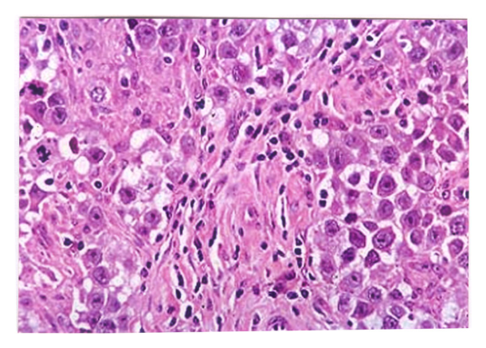
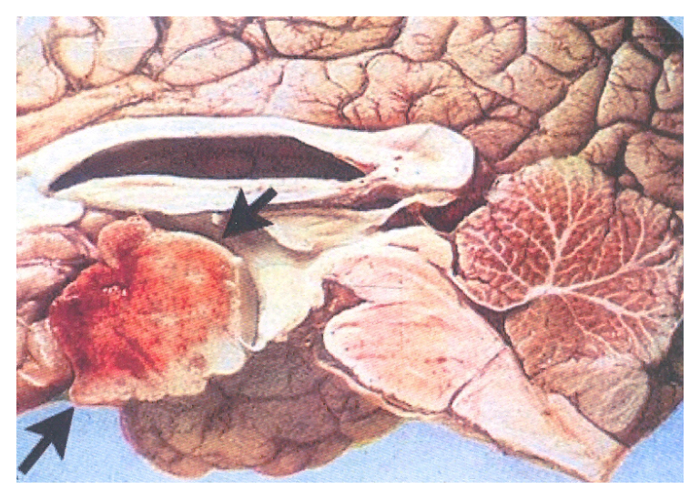

開卷有益 ／
醫師 ／ 醫學（二）（包括微生物免疫學、寄生蟲學、藥理學、病理學、公共衛生學等科目知識及其臨床之應用） ／ 110 年第 2 次110 年第 2 次醫師醫學（二）（包括微生物免疫學、寄生蟲學、藥理學、病理學、公共衛生學等科目知識及其臨床之應用）試題與答案
這一頁是民國 110 年第 2 次醫師醫學（二）（包括微生物免疫學、寄生蟲學、藥理學、病理學、公共衛生學等科目知識及其臨床之應用）的整份歷屆試題，共 100 題，題目與標準答案出自考選部「國家考試試題及測驗式試題答案」開放資料，其中 100 題附有詳解。以下逐題列出題幹、選項與答案；要計時作答或記錄成績，請用線上練習。
考選部原始場次代碼：110101
線上作答這一科 →
全部 100 題
第 1 題
患者經電腦斷層掃描發現肝膿瘍（liver abscesses），從膿瘍處培養出一株厭氧性革蘭氏陰性菌，具多形性（pleomorphic）的形態，此菌會產生一種外毒素（exotoxin）屬於鋅螯合蛋白酶（Zinc metalloprotease）。最可能是下列何種菌株？
（A） 痤瘡丙酸桿菌（Propionibacterium acnes）（B） 動物雙岐桿菌（Bifidobacterium animalis）（C） 脆弱擬桿菌（Bacteroides fragilis）（D） 牙齦紫質單胞菌（Porphyromonas gingivalis）答案：（C）
詳解與考點 正解：肝膿瘍培養出厭氧、革蘭氏陰性、多形性桿菌，且其外毒素為鋅螯合蛋白酶，這是脆弱擬桿菌（Bacteroides fragilis）的典型線索；其 fragilysin 為 zinc metalloprotease，故選 C。
A：痤瘡丙酸桿菌是革蘭氏陽性厭氧桿菌，與題目的革蘭氏陰性菌不符。
B：動物雙岐桿菌是革蘭氏陽性厭氧菌，不能符合革蘭氏陰性的首要篩選條件。
D：牙齦紫質單胞菌為厭氧革蘭氏陰性口腔菌，外觀上看似接近；但題幹特別指定的鋅螯合蛋白酶毒素與肝膿瘍線索更指向 Bacteroides fragilis。
本題考點：脆弱擬桿菌（Bacteroides fragilis）——腸道常在的厭氧革蘭氏陰性菌，可造成腹腔感染與肝膿瘍；fragilysin（B. fragilis toxin）是鋅螯合蛋白酶。
第 2 題
下列何種類型的痲瘋病主要會造成臉部損害變形？
（A） 類結核型痲瘋病（tuberculoid leprosy）（B） 中間型痲瘋病（intermediate leprosy）（C） 腫瘤型痲瘋病（lepromatous leprosy）（D） 丘疹型痲瘋病（papular leprosy）答案：（C）
詳解與考點 正解：「臉部損害變形」；腫瘤型痲瘋病（lepromatous leprosy）因細胞媒介免疫反應弱、菌量高，皮膚與周邊神經廣泛受侵犯，可造成瀰漫性臉部浸潤、結節與獅面樣改變，故選 C。
A：類結核型痲瘋病（tuberculoid leprosy）以較強的細胞媒介免疫反應為特徵，病灶通常較局限、菌量低，常見界線清楚的麻木斑塊；雖可損及神經，並非典型造成廣泛臉部變形的型態。
B：中間型痲瘋病（intermediate leprosy）可呈現介於兩端型態的臨床表現，但臉部廣泛浸潤與變形最具代表性的是（C）腫瘤型，而非此選項。
D：丘疹型痲瘋病（papular leprosy）不是用來對應痲瘋病免疫光譜兩端的標準主要分類；本題所問的典型毀容性表現應連結至（C）腫瘤型。
本題考點：痲瘋病免疫光譜（leprosy spectrum）——類結核型以強細胞媒介免疫與局限病灶為主；腫瘤型菌量高、皮膚浸潤廣泛，較易出現臉部變形；麻風分枝桿菌（Mycobacterium leprae）偏好侵犯皮膚與周邊神經。
第 3 題
磺胺類藥物（sulfonamides）能選擇性抑制細菌生長，對哺乳類細胞不具有明顯毒性之原因為：
（A） 哺乳類細胞無胜肽聚糖結構（peptidoglycan）（B） 哺乳類細胞膜不含固醇（sterols）（C） 哺乳類細胞不合成葉酸（folic acid）（D） 哺乳類細胞具有核糖體（ribosome）答案：（C）
詳解與考點 正解：磺胺類藥物對細菌有選擇性毒性；磺胺類為對胺基苯甲酸（PABA）的類似物，抑制細菌自行合成葉酸所需的二氫蝶酸合成酶。哺乳類無法自行合成葉酸，必須由飲食取得，因此缺乏此藥物標的，故選 C。
A：哺乳類細胞確實沒有胜肽聚糖，但這是 β-lactam 類等抑制細胞壁合成藥物具有選擇性毒性的理由，不能解釋磺胺類的作用。
B：哺乳類細胞膜含有膽固醇等固醇；「不含固醇」也不是磺胺類選擇性抑菌的機轉。它看似是在找細菌與人體的構造差異，卻沒有對到葉酸代謝這個真正標的。
D：哺乳類細胞具有核糖體，但其核糖體與細菌的 70S 核糖體不同；此差異與 tetracycline、macrolide 等蛋白質合成抑制劑相關，非磺胺類的作用依據。
本題考點：選擇性毒性（selective toxicity）——磺胺類（sulfonamides）抑制細菌葉酸合成（folate synthesis）；哺乳類依賴膳食葉酸，故不具有相同代謝標的。
第 4 題
下列有關革蘭氏陰性細菌之敘述，何者最適當？
（A） 不具有胜肽聚醣（Peptidoglycan）之結構（B） 革蘭氏染色結果呈藍色（C） 不會產生孢子（D） 利用有性生殖及無性生殖進行複製答案：（C）
詳解與考點 正解：革蘭氏陰性菌的共同特徵。其細胞壁仍有薄層胜肽聚醣，外有外膜，革蘭氏染色呈紅色或粉紅色；內孢子形成則是少數革蘭氏陽性桿菌的特徵，因此「不會產生孢子」最適當，故選 C。
A：革蘭氏陰性菌不是完全沒有胜肽聚醣，而是胜肽聚醣層較薄並位於內、外膜之間；把「較薄」誤作「不存在」是常見混淆。
B：革蘭氏染色呈藍紫色是革蘭氏陽性菌保留結晶紫的表現；革蘭氏陰性菌脫色後會被複染成紅色或粉紅色。
D：細菌主要以二分裂（binary fission）增殖，並不以有性生殖及無性生殖的交替方式複製；基因轉移也不等同於生殖。
本題考點：革蘭氏染色（Gram stain）——革蘭氏陰性菌具有薄胜肽聚醣與外膜，染色呈紅或粉紅色；細菌增殖（bacterial reproduction）以二分裂為主；內孢子（endospore）並非革蘭氏陰性菌的典型特徵。
第 5 題
因突變造成序列出現停止密碼（stop codon）而提早終止蛋白質的合成稱之為：
（A） 緘默突變（silent mutation）（B） 無效突變（null mutation）（C） 無意義突變（nonsense mutation）（D） 錯義突變（missense mutation）答案：（C）
詳解與考點 正解：「突變造成停止密碼而提早終止轉譯」。原本編碼胺基酸的密碼子變為終止密碼子，會使蛋白質過早截短，這正是無意義突變（nonsense mutation），故選 C。
A：緘默突變（silent mutation）雖改變 DNA 序列，但因遺傳密碼的簡併性，通常不改變所編碼的胺基酸，並非形成停止密碼。
B：無效突變（null mutation）指產物功能完全喪失的突變結果，可由多種分子變化造成；（C）無意義突變可能導致 null phenotype，但題幹問的是特定「停止密碼」的突變名稱。
D：錯義突變（missense mutation）是某一密碼子改為編碼另一種胺基酸，造成胺基酸置換，而不是提早終止蛋白質合成。
本題考點：點突變（point mutation）——無意義突變（nonsense mutation）產生停止密碼子；錯義突變（missense mutation）造成胺基酸替換；緘默突變（silent mutation）通常不改變胺基酸序列。
第 6 題
關於斑疹傷寒（Scrub typhus）之敘述，下列何者錯誤？
（A） 病原菌為Orientia tsutsugamushi（B） 人類是透過帶菌的體蝨（body louse）叮咬致病（C） 症狀包括頭疼、發燒、肌肉疼痛、皮疹等（D） doxycycline為治療的首選藥物答案：（B）
詳解與考點 正解：題目問錯誤敘述，關鍵是斑疹傷寒（scrub typhus）的傳播媒介。Orientia tsutsugamushi 由帶菌恙蟎幼蟲叮咬傳播，不是體蝨；因此（B）把媒介寫成體蝨錯誤，故選 B。
A：Orientia tsutsugamushi 是斑疹傷寒的病原體，敘述正確，故非答案。
C：發燒、頭痛、肌痛與皮疹是斑疹傷寒可見的表現，部分患者尚可見焦痂（eschar），故此敘述正確。
D：doxycycline 是斑疹傷寒常用的治療藥物，敘述正確；其容易與其他立克次體感染混淆，但不改變本題媒介鑑別。
本題考點：斑疹傷寒（scrub typhus）——病原為 Orientia tsutsugamushi，主要由恙蟎幼蟲（chigger）傳播；媒介傳播（vector-borne transmission）須與由體蝨傳播的流行性斑疹傷寒區分。
第 7 題
一位患者隔餐食用放在室溫含有雞蛋的馬鈴薯沙拉，隔天中午開始發燒、腹痛、上吐下瀉，排出的糞便不含血。下列那一株細菌是最有可能造成食物中毒的原因？
（A） 痢疾志賀桿菌（Shigella dysenteriae）（B） 產生志賀毒素的大腸桿菌（Shiga toxin-producing Escherichia coli）（C） 霍亂弧菌（Vibrio cholerae）（D） 傷寒沙門氏桿菌（Salmonella Typhi）答案：（D）
詳解與考點 正解：官方答案為 D；惟題幹的雞蛋馬鈴薯沙拉、短潛伏期、非血性腹瀉，典型應想到非傷寒沙門氏菌（nontyphoidal Salmonella），而選項卻列傷寒沙門氏菌（Salmonella Typhi）。若依官方答案將（D）視為題庫欲考的沙門氏菌屬食源性腸胃炎，則選 D；但 S. Typhi 通常造成傷寒及較長潛伏期，與題幹並不完全相符，故本題鑑別存在爭點。
A：痢疾志賀桿菌（Shigella dysenteriae）常造成侵襲性腸炎，可見發燒、腹痛、膿血便或裡急後重；題幹明示糞便不含血，且雞蛋沙拉不是其典型線索。
B：產生志賀毒素的大腸桿菌常以出血性結腸炎為表現，血便是重要辨識點；它看似也能引起腹痛與腹瀉，但與題幹的非血性糞便及蛋製品暴露不合。
C：霍亂弧菌（Vibrio cholerae）典型為大量米湯樣水瀉與脫水，通常沒有顯著發燒或以蛋類沙拉為主要暴露來源，故不符。
本題考點：食源性腸胃炎（foodborne gastroenteritis）——非傷寒沙門氏菌（nontyphoidal Salmonella）常與蛋類、家禽相關；傷寒沙門氏菌（Salmonella Typhi）主要造成腸熱病（enteric fever），兩者的臨床情境與潛伏期不同。
第 8 題
下列何種革蘭氏陽性絕對厭氧菌會造成婦女陰道感染？
（A） 無乳鏈球菌（Streptococcus agalactiae）（B） 動彎桿菌（Mobiluncus curtisii）（C） 鬆脆類桿菌（Bacteroides fragilis）（D） 白色念珠菌（Candida albicans）答案：（B）
詳解與考點 正解：「革蘭氏陽性絕對厭氧菌」合併婦女陰道感染。Mobiluncus curtisii 是與細菌性陰道炎（bacterial vaginosis）相關的彎曲桿菌，具革蘭氏陽性或革蘭氏可變染色特性，且為厭氧菌，故選 B。
A：無乳鏈球菌（Streptococcus agalactiae）是革蘭氏陽性菌，也可定殖女性生殖道，但不是絕對厭氧菌；其重要性在周產期母嬰感染。
C：鬆脆類桿菌（Bacteroides fragilis）是絕對厭氧菌，卻為革蘭氏陰性桿菌，常與腹腔內感染相關，故不符合題目的革蘭氏陽性條件。
D：白色念珠菌（Candida albicans）可造成外陰陰道念珠菌感染，但它是真菌而非細菌，不能作為本題所問的革蘭氏陽性厭氧菌。
本題考點：細菌性陰道炎（bacterial vaginosis）——Mobiluncus 屬為厭氧彎曲桿菌，與陰道菌相失衡相關；革蘭氏染色（Gram stain）與氧需求是鑑別陰道感染病原的重要線索。
第 9 題
下列有關肉毒桿菌毒素（botulinum toxin）之敘述，何者最適當？
（A） 作用於神經細胞（B） 造成痙攣性癱瘓（spastic paralysis）（C） 耐熱性毒素（heat-resistant toxin）（D） 為革蘭氏陰性菌分泌之外毒素（exotoxin）答案：（A）
詳解與考點 正解：肉毒桿菌毒素的作用部位與神經肌肉效應。肉毒桿菌毒素（botulinum toxin）作用於周邊膽鹼性神經末梢，抑制乙醯膽鹼釋放，故屬作用於神經細胞的毒素，選 A。
B：乙醯膽鹼無法釋放會使骨骼肌無法收縮，造成的是弛緩性癱瘓（flaccid paralysis），不是痙攣性癱瘓。
C：肉毒桿菌毒素為蛋白質性外毒素，受熱可失活，並非耐熱性毒素；它看似與某些食物中毒的耐熱毒素相近，但毒素性質不同。
D：肉毒桿菌（Clostridium botulinum）是革蘭氏陽性、產孢子的厭氧桿菌，故不能稱其分泌物為革蘭氏陰性菌之外毒素。
本題考點：肉毒中毒（botulism）——肉毒桿菌毒素（botulinum toxin）阻斷神經末梢乙醯膽鹼（acetylcholine）釋放，導致對稱性下行的弛緩性癱瘓；外毒素（exotoxin）多為熱不穩定蛋白質。
第 10 題
以細胞學方式鑑定病毒，下列何種病毒感染細胞後會引發細胞融合（syncytia）並形成巨大細胞？
（A） 腸病毒（enterovirus）（B） 登革病毒（dengue virus）（C） 人類免疫缺失病毒（human immunodeficiency virus）（D） 狂犬病病毒（rabies virus）本題送分，無標準答案
詳解與考點 本題官方公告送分。
第 11 題
下列何種病毒感染最容易引起嬰兒先天性白內障（congenital cataract）之病徵？
（A） 單純疱疹病毒（herpes simplex virus）（B） 腸病毒（enterovirus）（C） 腺病毒（adenovirus）（D） 德國麻疹病毒（rubella virus）答案：（D）
詳解與考點 正解：嬰兒「先天性白內障」。孕期感染德國麻疹病毒（rubella virus）可造成先天性德國麻疹症候群（congenital rubella syndrome），其經典表現包括白內障、先天性心臟病與感音性聽損，故選 D。
A：單純疱疹病毒（herpes simplex virus）可造成新生兒皮膚、眼、口腔或中樞神經感染，但先天性白內障不是其最具代表性的先天感染表現。
B：腸病毒（enterovirus）可導致新生兒嚴重全身性感染、心肌炎或腦膜腦炎，與先天性白內障的典型關聯較弱。
C：腺病毒（adenovirus）可造成呼吸道、結膜或腸胃道感染，但不構成先天性白內障的經典病因。
本題考點：先天性感染（congenital infection）——先天性德國麻疹症候群（congenital rubella syndrome）可見白內障、心臟病與聽損；孕期感染的胎兒器官傷害與感染時期密切相關。
第 12 題
下列病毒，那幾種最可能經由性行為感染？①肝炎病毒A型（HAV） ②單純疱疹病毒（herpes simplexvirus） ③茲卡病毒（Zika virus） ④麻疹病毒（measles virus）
（A） ①②（B） ②③（C） ③④（D） ①③本題送分，無標準答案
詳解與考點 本題官方公告送分。
第 13 題
目前對愛滋病的治療用藥不包含下列何種類型的藥物？
（A） Reverse transcriptase inhibitor（B） Protease inhibitor（C） Integrase inhibitor（D） Neuraminidase inhibitor答案：（D）
詳解與考點 正解：題目問目前 HIV 治療不包含的藥物類型。HIV 複製涉及反轉錄酶、整合酶與蛋白酶，皆為抗反轉錄病毒治療（antiretroviral therapy）的標的；神經胺酸酶（neuraminidase）則是流感病毒釋放相關的酵素，不是 HIV 標的，故選 D。
A：反轉錄酶抑制劑（reverse transcriptase inhibitor）是 HIV 治療的核心藥物類別之一，可抑制病毒 RNA 反轉錄為 DNA。
B：蛋白酶抑制劑（protease inhibitor）阻斷 HIV 多蛋白前驅物的切割成熟，屬抗 HIV 藥物類型。
C：整合酶抑制劑（integrase inhibitor）阻止病毒 DNA 整合入宿主基因組，是現行 HIV 治療的重要類別。
本題考點：抗反轉錄病毒治療（antiretroviral therapy）——HIV 的反轉錄酶（reverse transcriptase）、整合酶（integrase）與蛋白酶（protease）均可作為藥物標的；神經胺酸酶（neuraminidase）抑制與流感治療相關。
第 14 題
下列有關副黏液病毒（paramyxovirus）的敘述，何者最適當？
（A） 病毒基因體（genome）即是mRNA，可以被直接轉譯成蛋白質（B） 病毒顆粒中並未包裹RNA聚合酶（RNA polymerase）（C） 病毒感染後引發細胞融合（syncytium）（D） 在病毒複製過程中，所有病毒蛋白的產量是一致的答案：（C）
詳解與考點 正解：副黏液病毒感染細胞後的典型細胞病變。副黏液病毒（paramyxovirus）的融合蛋白可使相鄰細胞膜融合，形成多核巨細胞（syncytium），故選 C。
A：副黏液病毒為負股單股 RNA 病毒，基因體不能直接當作 mRNA 轉譯，必須先由病毒 RNA 聚合酶轉錄出正股 mRNA。
B：因宿主細胞沒有可直接轉錄負股 RNA 的酶，副黏液病毒顆粒必須攜帶 RNA 聚合酶；此選項恰好把必要條件寫反。
D：負股 RNA 病毒的轉錄量受基因排列與轉錄終止、再起始機率影響，靠近啟動端的基因產物通常較多，不會所有病毒蛋白產量一致。
本題考點：副黏液病毒（paramyxovirus）——負股單股 RNA 病毒（negative-sense single-stranded RNA virus）須自帶 RNA 聚合酶；融合蛋白（fusion protein）可造成細胞融合（syncytium）。
第 15 題
下列何種病毒不屬於小RNA病毒科（Picornaviridae）？
（A） A型肝炎病毒（hepatitis A virus）（B） 腸病毒（enterovirus）（C） 鼻病毒（rhinovirus）（D） 冠狀病毒（coronavirus）答案：（D）
詳解與考點 正解：病毒科分類。A 型肝炎病毒、腸病毒與鼻病毒皆屬小 RNA 病毒科（Picornaviridae）；冠狀病毒（coronavirus）則屬冠狀病毒科（Coronaviridae），故選 D。
A：A 型肝炎病毒（hepatitis A virus）是小 RNA 病毒科成員，為無套膜正股 RNA 病毒，故非答案。
B：腸病毒（enterovirus）本身就是小 RNA 病毒科中的重要屬群，包含多種人類腸道相關病毒，故非答案。
C：鼻病毒（rhinovirus）亦屬小 RNA 病毒科，常引起上呼吸道感染，故非答案。
本題考點：小 RNA 病毒科（Picornaviridae）——常見成員包括腸病毒（enterovirus）、鼻病毒（rhinovirus）與 A 型肝炎病毒（hepatitis A virus）；病毒分類（viral taxonomy）可藉病毒科與基因體特性辨識。
第 16 題
下列有關絲狀病毒（filovirus）的敘述，何者正確？
（A） 病毒可經由蝙蝠及猴子感染人類，也可以人傳人（B） 2018年的伊波拉（Ebola）病毒大流行發生在海地（C） 病毒基因為正股(+)RNA（D） 伊波拉（Ebola）病毒的顆粒是子彈型答案：（A）
詳解與考點 正解：絲狀病毒的人畜共通與人傳人特性。伊波拉病毒等絲狀病毒（filovirus）可由蝙蝠等動物宿主或受感染靈長類傳給人，也可經血液與其他體液密切接觸在人與人之間傳播，故選 A。
B：2018 年伊波拉疫情的重要流行地在剛果民主共和國，並非海地，故錯。
C：絲狀病毒為負股單股 RNA 病毒（negative-sense single-stranded RNA virus），不是正股 RNA。
D：伊波拉病毒顆粒呈絲狀；子彈型（bullet-shaped）顆粒是狂犬病病毒等彈狀病毒的典型形態。兩者皆為 RNA 病毒，容易因形態名稱混淆。
本題考點：絲狀病毒科（Filoviridae）——伊波拉病毒（Ebola virus）是負股單股 RNA、絲狀包膜病毒；人畜共通傳播（zoonotic transmission）後可透過感染者體液發生人傳人傳播。
第 17 題
關於格特隱球菌（Cryptococcus gattii）之敘述，下列何者錯誤？
（A） 為具有莢膜（capsule）的酵母菌（B） 主要的環境棲地（habitat）為尤加利樹（Eucalyptus tree）（C） 較常感染健全免疫（immunocompetent）的患者（D） 造成的臨床神經學症狀較輕微答案：（D）
詳解與考點 正解：題目問錯誤敘述，關鍵是格特隱球菌感染的神經學嚴重度。Cryptococcus gattii 可在免疫功能正常者造成較大的隱球菌腫與中樞神經感染，臨床神經學表現不一定較輕微，故（D）錯誤。
A：格特隱球菌是具有多醣莢膜（capsule）的酵母菌，莢膜是其重要致病因子，敘述正確。
B：格特隱球菌與尤加利樹（Eucalyptus tree）等環境棲地相關，敘述正確。
C：相較於新型隱球菌，格特隱球菌較常感染免疫功能健全者，這正是重要鑑別點，故非答案。
本題考點：格特隱球菌（Cryptococcus gattii）——具有莢膜（capsule）的環境酵母菌，可感染免疫功能健全者；隱球菌腦膜腦炎（cryptococcal meningoencephalitis）與隱球菌腫可造成顯著神經學病變。
第 18 題
有關補體系統（complement system）的敘述，下列何者錯誤？
（A） 補體系統是諾貝爾獎得主Jules Bordet在血清中所發現一種對熱不穩定而且具有殺菌功能的物質（B） 補體系統所包含30幾種血漿蛋白主要由脾臟產生。平常這些蛋白以活化狀態存在，一旦有病原菌入侵可立即反應（C） 補體系統可以經由傳統途徑（classical pathway）、替代途徑（alternative pathway）或凝集素（lectinpathway）來啟動一系列蛋白酶的反應（D） 補體活化後的產物可具備調理作用（opsonization）、趨化作用（chemotaxis）、促進吞噬作用及發炎反應答案：（B）
詳解與考點 正解：題目問錯誤敘述，關鍵是補體蛋白的來源與靜止狀態。多數補體蛋白主要由肝臟合成，且平時以不活化前驅物存在，受啟動後才依序活化；（B）稱主要由脾臟產生且平時已活化，兩處皆錯，故選 B。
A：Jules Bordet 對血清中熱不穩定殺菌成分的研究是補體概念建立的重要歷史脈絡，敘述正確，故非答案。
C：補體可由傳統途徑（classical pathway）、替代途徑（alternative pathway）及凝集素途徑（lectin pathway）啟動，最後形成共同的效應級聯，敘述正確。
D：補體活化產物可促進調理作用、趨化、吞噬與發炎反應，故敘述正確；其中不同裂解產物各有不同效應，不能把所有功能歸於單一成分。
本題考點：補體系統（complement system）——多數補體蛋白由肝臟製造並以不活化前驅物存在；補體活化（complement activation）有傳統、替代與凝集素途徑；效應包括調理作用（opsonization）與發炎反應。
第 19 題
下列關於MHC class I 的敘述何者錯誤 ？
（A） MHC class I 的功能主要為呈獻內源性抗原，並激活CD8 T淋巴細胞（B） MHC class I 比 MHC class II 呈獻較長的胜肽（約13～17個胺基酸）（C） MHC class I 輕鏈為β2-microglobulin（D） MHC class I 主要的胜肽接合處位於α1與α2 domain答案：（B）
詳解與考點 正解：題目問錯誤敘述，關鍵是 MHC class I 與 MHC class II 所呈獻胜肽的長度。MHC class I 的胜肽結合槽兩端封閉，通常呈獻較短的內源性胜肽；較長的胜肽呈獻較符合 MHC class II。因此（B）稱 MHC class I 呈獻較長、約 13～17 個胺基酸錯誤，故選 B。
A：MHC class I 主要呈獻細胞內來源的抗原胜肽給 CD8 T 淋巴細胞，敘述正確，故非答案。
C：MHC class I 的輕鏈為 β2-microglobulin，與重鏈非共價結合，敘述正確。
D：MHC class I 的胜肽結合處主要由 α1 與 α2 domain 構成，敘述正確；它容易與（B）的胜肽長度一起考，但結構位置本身無誤。
本題考點：主要組織相容性複合體第一類（MHC class I）——呈獻內源性抗原（endogenous antigen）給 CD8 T 細胞；胜肽結合槽由 α1、α2 domain 構成並結合較短胜肽；β2-microglobulin 為其輕鏈。
第 20 題
V(D)J重組的過程有許多蛋白參與，下列有關這些蛋白和其功能的敘述何者錯誤？
（A） RAG-1 和RAG-2：辨識recombination signal sequences（RSS）之後產生DNA斷裂（B） DNA ligase IV 和XRCC4：連結DNA的斷裂點（C） Artemis：具有nuclease activity可以打開DNA hairpin結構，產生P-nucleotide（D） TdT：和Ku蛋白結合後，可以標記DNA的斷裂點或異常的結構答案：（D）
詳解與考點 正解：題目問 V(D)J 重組蛋白功能何者錯誤，關鍵是 TdT 的角色。末端去氧核苷酸轉移酶（terminal deoxynucleotidyl transferase, TdT）會在重組接合處隨機加入非模板 N 核苷酸，增加接合多樣性；它不是與 Ku 結合後標記 DNA 斷裂點或異常結構的蛋白，因此（D）錯誤，故選 D。
A：RAG-1 與 RAG-2 辨識重組訊號序列（recombination signal sequences, RSS）並造成 DNA 雙股斷裂，是 V(D)J 重組的起始步驟，敘述正確。
B：DNA ligase IV 與 XRCC4 為非同源末端連接（non-homologous end joining）複合體成員，負責連結處理後的 DNA 末端，敘述正確。
C：Artemis 具有核酸酶活性，可打開髮夾狀 DNA 末端並產生 P 核苷酸，敘述正確。
本題考點：V(D)J 重組（V(D)J recombination）——RAG-1/RAG-2 辨識 RSS 並切割 DNA；Artemis 處理髮夾末端；DNA ligase IV/XRCC4 連接末端；TdT 加入 N 核苷酸以增加抗原受體多樣性。
第 21 題
利用免疫檢查點，細胞毒素的T淋巴細胞關聯蛋白質4（CTLA-4, CD152）可藉由競爭何種T淋巴細胞活化路徑，達到免疫抑制，而有助腫瘤細胞免疫逃脫？
（A） CD28 - B7.1（B） OX40 - OX40 ligand（C） CD8 - MHC class I（D） LFA-1- ICAM-1答案：（A）
詳解與考點 正解：CTLA-4 如何抑制 T 細胞活化。CTLA-4 與 T 細胞上的 CD28 競爭結合抗原呈現細胞的 B7 分子；CTLA-4 結合後傳遞抑制訊號並減少共刺激，因此其競爭的活化路徑是 CD28-B7.1，故選 A。
B：OX40 與 OX40 ligand 是另一組 T 細胞共刺激分子，但不是 CTLA-4 直接競爭的配體組合。
C：CD8 與 MHC class I 的交互作用協助細胞毒性 T 細胞辨識抗原呈現細胞，屬抗原辨識相關結構，不是 CTLA-4 所競爭的共刺激軸。
D：LFA-1 與 ICAM-1 主要參與免疫細胞黏附與免疫突觸穩定，並非 CTLA-4 進行抑制時競爭的受體－配體組合。
本題考點：免疫檢查點（immune checkpoint）——CTLA-4（CD152）競爭 CD28 對 B7 的結合而抑制 T 細胞共刺激（costimulation）；腫瘤免疫逃脫（tumor immune evasion）可利用此類抑制訊號。
第 22 題
下列何種細胞激素並非由TH2細胞（TH2 cell）所分泌？
（A） IL-4（B） IL-5（C） IL-12（D） IL-13答案：（C）
詳解與考點 正解：「並非由 TH2 細胞分泌」。TH2 細胞主要驅動體液免疫與過敏反應，典型細胞激素包括 IL-4、IL-5、IL-13；IL-12 則主要由樹突細胞與巨噬細胞等抗原呈現細胞產生，促進 TH1 分化，故選 C。
A：IL-4 是 TH2 的代表性細胞激素，可促進 B 細胞類別轉換，尤其與 IgE 反應有關，故不是本題所問的非 TH2 分泌物。
B：IL-5 由 TH2 分泌，能促進嗜酸性球的生長、活化及存活；它看似可與其他 T 細胞激素混淆，但正是 TH2 反應的重要成員。
D：IL-13 與 IL-4 的功能部分重疊，參與 IgE 相關反應、黏液分泌與氣道過敏性發炎，屬 TH2 細胞激素。
本題考點：輔助型 T 細胞分化（T helper cell differentiation）——TH2 主要分泌 IL-4、IL-5、IL-13；IL-12（interleukin-12）由先天免疫細胞產生並偏向誘導 TH1 反應。
第 23 題
下列有關B細胞活化的敘述，何者錯誤？
（A） 胸腺依賴型（thymus-dependent）抗原是蛋白質，在和BCR結合後經由胞吞作用分解成peptides抗原呈獻給T細胞，活化T細胞表現CD19 ligand結合到B細胞，傳遞第二訊號來促進B細胞的完全活化（B） LPS為thymus-independent 抗原，可以在缺乏T細胞的小鼠中刺激B細胞活化及細胞分裂，也可促進漿細胞分化，分泌IgM抗體（C） B型嗜血桿菌（Haemophilus influenza, type b）疫苗的組成包含細菌的莢膜多醣體結合載體蛋白（carrierproteins），莢膜多醣體由B細胞辨識，T細胞辨識蛋白質部分，但遺傳性免疫缺失疾病Wiskott-Aldrichsyndrome病人因為T細胞和B細胞交互作用有問題，導致B細胞無法順利分化成漿細胞，因此抗莢膜多醣體的專一性抗體產量很低，無法達到保護效果（D） B型嗜血桿菌（Haemophilus influenza, type b）疫苗的組成包含細菌的莢膜多醣體結合載體蛋白（carrierproteins），這樣的設計是因為莢膜多醣體為thymus-independent抗原，單獨使用無法刺激良好的免疫反應答案：（A）
詳解與考點 正解：胸腺依賴型抗原活化 B 細胞的第二訊號。B 細胞以 BCR 結合蛋白抗原後內吞、處理並以 MHC class II 呈現胜肽給輔助型 T 細胞；已活化的 T 細胞是以 CD40 ligand 與 B 細胞的 CD40 結合提供關鍵第二訊號，而不是以「CD19 ligand」結合，故錯誤的是 A。
B：LPS 是典型胸腺非依賴型抗原，可直接活化 B 細胞；即使缺乏 T 細胞，仍可造成 B 細胞增生、分化並主要分泌 IgM，敘述正確。
C：Hib 結合型疫苗將莢膜多醣接上載體蛋白，使 B 細胞辨識多醣後能獲得蛋白特異性 T 細胞協助。Wiskott-Aldrich syndrome 的 T、B 細胞協同作用受損，確會降低抗多醣莢膜抗體反應，敘述正確。
D：莢膜多醣本身屬胸腺非依賴型抗原，免疫記憶與幼兒免疫反應較弱；接合載體蛋白正是為了把反應轉成可獲 T 細胞協助的型態，敘述正確。
本題考點：胸腺依賴型 B 細胞活化（thymus-dependent B-cell activation）——BCR 抗原辨識後由 CD40-CD40 ligand 提供 T 細胞協助；結合型疫苗（conjugate vaccine）可改善多醣抗原的免疫原性。
第 24 題
疫苗的開發大幅度減少了感染症對人類的威脅，有關疫苗的敘述何者最不適當？
（A） 疫苗有減毒疫苗（attenuated vaccine）及非活性疫苗（killed vaccine）。雖然減毒疫苗的效果較好，它的風險也比較大（B） 不論任何途徑給與疫苗都不會影響免疫反應的效果，因此大多數的疫苗都是用肌肉注射的方式（C） 通常有效的疫苗都會引起抗體反應去阻止病原的入侵或是中和毒素的作用（D） 以蛋白或胜肽為主的疫苗（protein or peptide-based vaccine）通常需要佐劑（adjuvant）去加強免疫反應，而佐劑的作用主要是活化先天免疫反應答案：（B）
詳解與考點 正解：「最不適當」且選項宣稱任何給藥途徑都不影響疫苗效果。疫苗的投與途徑會影響抗原接觸組織、先天免疫活化與誘發的黏膜或全身性免疫；例如口服與鼻內途徑較能誘發黏膜免疫。因此不能說途徑一概不影響效果，故選 B。
A：減毒活疫苗通常可在宿主內有限複製，常引發較強且持久的免疫反應；相對地，在特定免疫功能低下者有安全性顧慮，敘述合理。
C：許多有效疫苗透過誘發中和抗體阻止病原入侵或中和毒素，這是常見保護機轉；雖非所有疫苗只靠抗體，但選項的「通常」敘述適當。
D：蛋白或胜肽抗原的免疫原性往往較弱，常需佐劑加強；佐劑可藉由活化先天免疫與增進抗原呈現來促進適應性免疫，敘述正確。
本題考點：疫苗投與途徑（route of vaccine administration）——途徑可改變黏膜與全身免疫反應；佐劑（adjuvant）透過先天免疫活化提升蛋白或胜肽疫苗的免疫原性。
第 25 題
關於臺灣重要過敏原之敘述，下列何者正確？
（A） 貓狗等寵物產生的過敏原屬於此類（B） 在乾燥高溫的環境裡容易滋長（C） 節肢動物的排泄物是重要的過敏原（D） 致敏生物的體型微小，需要電子顯微鏡才可以看見本題送分，無標準答案
詳解與考點 本題官方公告送分。
第 26 題
下列何種自體免疫疾病最不可能因母親的自體抗體經由穿過胎盤導致新生兒產生相關疾病？
（A） Graves' disease（B） Ｍyasthenia gravis（C） thrombocytopenic purpura（D） type 1 DM（diabetes mellitus）答案：（D）
詳解與考點 正解：母體自體抗體穿越胎盤造成「新生兒相關疾病」。母體 IgG 可穿越胎盤，若靶點位於新生兒可表現的細胞表面或受體，便可能造成暫時性疾病；第 1 型糖尿病主要是 T 細胞介導的胰島 β 細胞自體免疫破壞，並非以可轉移的母體抗體造成典型新生兒糖尿病，故選 D。
A：Graves' disease 的促甲狀腺激素受體抗體可穿越胎盤並刺激胎兒或新生兒甲狀腺，造成新生兒甲狀腺功能亢進。
B：重症肌無力的抗乙醯膽鹼受體抗體可經胎盤移轉，使新生兒出現暫時性肌無力，故不是最不可能者。
C：免疫性血小板低下的母體抗血小板抗體可穿越胎盤並破壞胎兒或新生兒血小板，造成血小板低下。
本題考點：胎盤 IgG 轉運（transplacental IgG transfer）——母體 IgG 可造成新生兒暫時性自體抗體疾病；第 1 型糖尿病（type 1 diabetes mellitus）以細胞媒介自體免疫為主。
第 27 題
2018年諾貝爾獎頒給開發以CTLA-4及PD-1分子為基礎的癌症免疫治療學者。阻斷個體內CTLA-4及PD-1分子的作用對於腫瘤細胞的主要影響是：
（A） 抑制了間質細胞及自然殺手細胞的作用，而增加腫瘤細胞的生長及移轉（B） 抑制腫瘤內B淋巴球的磷酸酶活性，而增加腫瘤細胞的生長及移轉（C） 經由抑制淋巴球活化時的負性調控作用，增加抗腫瘤T淋巴球的活性，進而殺死腫瘤細胞（D） 經由活化含有ITIMs（immunoreceptor tyrosine-based inhibitory motifs）結構的分子作用，抑制腫瘤細胞的生長及分化答案：（C）
詳解與考點 正解：阻斷 CTLA-4 與 PD-1。兩者都是 T 淋巴球活化的免疫檢查點（immune checkpoint），原本提供負性調控以限制免疫反應；以抗體阻斷它們可解除煞車、恢復或增強抗腫瘤 T 細胞活性，進而殺死腫瘤細胞，故選 C。
A：CTLA-4、PD-1 阻斷的主要效果不是抑制自然殺手細胞或增加腫瘤生長，反而是增強以 T 細胞為核心的抗腫瘤免疫。
B：此療法並非藉由抑制腫瘤內 B 淋巴球的磷酸酶活性；它看似提到抑制訊號分子，卻把作用細胞與結果都錯置。
D：ITIM 相關抑制訊號會降低免疫細胞活性；阻斷 CTLA-4、PD-1 是解除而非活化此類負性調控，故不符。
本題考點：免疫檢查點抑制劑（immune checkpoint inhibitors）——CTLA-4 與 PD-1 是 T 細胞負性調控分子；阻斷後可增強抗腫瘤 T 細胞反應。
第 28 題
移植物對抗宿主病（graft-versus-host disease）最常發生在：
（A） 造血幹細胞移植（hematopoietic stem cell transplantation）（B） 腎移植（kidney transplantation）（C） 肝移植（liver transplantation）（D） 心臟移植（heart transplantation）答案：（A）
詳解與考點 正解：移植物內含有能攻擊宿主的免疫活性細胞。造血幹細胞移植會連同供者成熟 T 細胞植入，這些 T 細胞在免疫功能受抑的受者體內辨識宿主組織為異物並攻擊皮膚、肝臟與腸道，因此移植物對抗宿主病最常見於造血幹細胞移植，故選 A。
B：腎移植的移植物主要不是大量免疫活性 T 細胞來源，臨床主要問題是受者排斥移植物，而非典型移植物對抗宿主病。
C：肝臟可攜帶較多免疫細胞，仍可能罕見發生移植物對抗宿主病；但其發生率遠低於造血幹細胞移植，故非最常發生者。
D：心臟移植同樣主要面臨宿主對移植物的排斥，並非移植物 T 細胞大量攻擊宿主的典型情境。
本題考點：移植物對抗宿主病（graft-versus-host disease, GVHD）——供者免疫活性 T 細胞攻擊受者組織；造血幹細胞移植（hematopoietic stem cell transplantation）是最典型高風險情境。
第 29 題
關於蟠尾絲蟲（Onchocerca volvulus）的敘述，下列何者錯誤？
（A） 微絲蟲會侵犯患者眼睛造成失明（B） 自皮膚切片（skin snips）發現微絲蟲為主要診斷方法（C） 患者可能出現鼠蹊懸垂（hanging groin）（D） 患者常會出現肺部結節（pulmonary nodules）答案：（D）
詳解與考點 正解：「何者錯誤」及蟠尾絲蟲的皮膚與眼部病變。Onchocerca volvulus 的成蟲形成皮下結節，微絲蟲移行於皮膚與眼部，可致皮膚炎及河盲症；肺部結節不是其典型臨床表現，故錯誤的是 D。
A：微絲蟲進入眼部可造成角膜與眼內發炎，長期可導致視力受損甚至失明，敘述正確。
B：皮膚切片取得微絲蟲的 skin snip 是傳統且重要的診斷方式，因微絲蟲主要分布於皮膚而非周邊血。
C：慢性皮膚與皮下組織受累可使鼠蹊部皮膚鬆弛下垂，形成 hanging groin，為蟠尾絲蟲症的典型描述之一。
本題考點：蟠尾絲蟲症（onchocerciasis）——微絲蟲寄居皮膚與眼部，可造成河盲症（river blindness）；皮膚切片（skin snip）用於檢出微絲蟲。
第 30 題
下列何者不適用於旋毛蟲（Trichinella spiralis）感染的診斷？
（A） 檢查患者糞便中之蟲卵（B） 特異性抗體檢查（C） 臨床症狀（D） 骨骼肌切片檢查（biopsy of skeletal muscle）答案：（A）
詳解與考點 正解：旋毛蟲的成蟲與幼蟲並不在腸腔內持續產卵。Trichinella spiralis 的雌蟲在腸黏膜產出幼蟲，幼蟲經血行移行並包囊於骨骼肌；患者糞便中通常沒有可供檢查的蟲卵，因此糞便蟲卵檢查不適用，故選 A。
B：感染後可檢測到特異性抗體，血清學檢查可作為診斷佐證，特別是在幼蟲已移行至組織的階段。
C：發燒、肌痛、眼瞼周圍水腫及嗜酸性球增多等臨床表現，配合生食或未熟肉品暴露史，可支持旋毛蟲感染的判斷。
D：骨骼肌切片可直接尋找包囊或幼蟲，是能提供病原證據的診斷方法；它看似侵入性高，卻不是「不適用」。
本題考點：旋毛蟲症（trichinellosis）——幼蟲移行並寄生於骨骼肌；診斷可依血清學、臨床表現及肌肉切片，糞便蟲卵檢查通常無用。
第 31 題
下列何種寄生蟲的幼蟲可以在人體小腸絨毛內發育，並完成生活史？
（A） 短小包膜絛蟲（Hymenolepis nana）（B） 豬肉絛蟲（Taenia solium）（C） 多房性包生絛蟲（Echinococcus multilocularis）（D） 曼森裂頭絛蟲（Spirometra mansonoides）答案：（A）
詳解與考點 正解：幼蟲可在「人體小腸絨毛內」發育並完成生活史。短小包膜絛蟲的卵可在人體腸道孵化，六鉤蚴侵入小腸絨毛發育為囊尾幼蟲，再回到腸腔成熟為成蟲，無須中間宿主即可完成生活史，故選 A。
B：豬肉絛蟲的幼蟲主要在豬等中間宿主形成囊尾幼蟲；人類腸道中的成蟲並不以小腸絨毛內完成幼蟲發育週期。
C：多房性包生絛蟲的幼蟲主要侵犯人類肝臟等器官形成浸潤性病灶，人是偶然中間宿主，不能在腸道完成生活史。
D：曼森裂頭絛蟲的生活史需經甲殼類與脊椎動物等中間宿主，人體感染多為幼蟲寄生，並非在小腸絨毛內完成週期。
本題考點：短小包膜絛蟲（Hymenolepis nana）——可直接在人類體內完成生活史（direct life cycle）；囊尾幼蟲（cysticercoid）在小腸絨毛中發育。
第 32 題
有關瘧原蟲（Plasmodium spp.）生活史與形態的敘述，下列何者正確？
（A） 人體內裂殖子（merozoite）會轉變成為大 ／小配子母細胞（macro- / micro-gametocyte）（B） 大 ／小配子母細胞受精後，會被瘧蚊攝入體內，變成卵動子（ookinete），進行減數分裂後，產生孢子體（sporozoite）（C） 造成復發的主因是因為孢子體進入肝臟細胞後，轉變成為休眠之裂殖生殖期（schizogony）所致（D） 瘧色素（hemozoin）是一種含鐵的蛋白質，係由瘧原蟲產生，主要原料源自於宿主的乳鐵蛋白（lactoferrin）答案：（A）
詳解與考點 正解：瘧原蟲在人體內的有性階段。紅血球內的裂殖子進入新的紅血球後，多數進行無性生殖；部分則分化為大、 小配子母細胞。配子母細胞被雌性瘧蚊吸入後才在蚊體腸道形成配子並受精，故 A 正確。
B：受精不是發生在配子母細胞被蚊吸入之前，而是在蚊體內；且卵動子形成後穿過蚊腸壁發育成卵囊，再產生孢子體，流程與位置皆倒置。
C：造成特定瘧疾復發的是肝細胞內休眠子（hypnozoite）再活化，不是孢子體轉變成「休眠之裂殖生殖期」；此選項看似提到肝臟階段，卻混淆了型態。
D：瘧色素是瘧原蟲分解宿主血紅素後形成的結晶性聚合物，不是含鐵蛋白質，也不是以乳鐵蛋白為主要原料。
本題考點：瘧原蟲生活史（Plasmodium life cycle）——人體內可形成配子母細胞（gametocyte），蚊體內完成受精與孢子體形成；休眠子（hypnozoite）與復發有關。
第 33 題
有關隱孢子蟲症（cryptosporidiosis）的敘述，下列何者正確？
（A） 患者有嚴重腹瀉，並伴隨乳糜瀉（celiac disease）發生（B） 蟲體會入侵小腸的肌肉層（muscularis）進行兩次無性生殖，待孢子成熟後再入侵上皮細胞的刷狀緣（brushborder）發育（C） 愛滋病患常見的伺機性（opportunistic）寄生蟲感染症之一（D） 發育中的卵囊為紡錘形，未成熟卵囊只見一個孢子母細胞（sporoblast），會在體外繼續發育為兩個孢子細胞（sporocyst）答案：（C）
詳解與考點 正解：隱孢子蟲症在免疫缺損者的表現。Cryptosporidium 是愛滋病患者常見的伺機性腸道寄生蟲，可造成持續且嚴重的水樣腹瀉，故 C 正確。
A：隱孢子蟲症可致嚴重腹瀉，但乳糜瀉是對麩質相關的免疫性腸病，並非其典型伴隨疾病，故後半敘述錯誤。
B：蟲體主要位於小腸上皮細胞刷狀緣的表面相關位置，並非先入侵肌肉層再進行無性生殖；它看似同時提到刷狀緣，卻把寄生位置與發育順序顛倒。
D：隱孢子蟲卵囊成熟時含 4 個裸露孢子子，且可直接具感染性，並不依所述的紡錘形卵囊與兩個孢子囊在體外成熟。
本題考點：隱孢子蟲症（cryptosporidiosis）——小腸刷狀緣相關感染造成水樣腹瀉；伺機性感染（opportunistic infection）在愛滋病等細胞免疫缺損者特別重要。
第 34 題
白蛉（sandfly）為下列何種人類寄生蟲病之主要傳播病媒？
（A） 黑水熱（blackwater fever）（B） 黑死病（black death）（C） 黑熱病（kala-azar）（D） 斷骨熱（breakbone fever）答案：（C）
詳解與考點 正解：白蛉（sandfly）的病媒。白蛉傳播利什曼原蟲（Leishmania），其內臟型感染稱黑熱病或 kala-azar，因此白蛉是黑熱病的主要傳播病媒，故選 C。
A：黑水熱是嚴重瘧疾的臨床表現，瘧疾由按蚊（Anopheles mosquito）傳播，非白蛉。
B：黑死病主要與鼠蚤傳播的 Yersinia pestis 有關，病媒不是白蛉。
D：斷骨熱是登革熱的別稱，主要由斑蚊（Aedes mosquito）傳播；名稱同屬熱帶病容易混淆，但病媒不同。
本題考點：利什曼原蟲病（leishmaniasis）——白蛉（sandfly）是傳播病媒；內臟利什曼原蟲病（visceral leishmaniasis）又稱黑熱病（kala-azar）。
第 35 題
下列何者為傳播人巴貝氏原蟲症（human babesiosis）之主要病媒？
（A） 革蜱屬（Dermacentor spp.）（B） 硬蜱屬（Ixodes spp.）（C） 花蜱屬（Amblyomma spp.）（D） 血蜱屬（Haemaphysalis spp.）答案：（B）
詳解與考點 正解：人巴貝氏原蟲症的主要病媒。人類 babesiosis 主要由硬蜱屬 Ixodes spp. 傳播，這類蜱也是萊姆病等蜱媒疾病的重要病媒，故選 B。
A：革蜱屬與某些立克次體疾病等蜱媒感染較相關，並非人巴貝氏原蟲症的主要病媒。
C：花蜱屬能傳播其他病原，但不是人巴貝氏原蟲症最典型的傳播媒介。
D：血蜱屬亦非本病的主要病媒；題目考的是特定病原與蜱屬配對，而不能只因同為硬蜱就視為正確。
本題考點：人巴貝氏原蟲症（human babesiosis）——Babesia 寄生紅血球並由硬蜱屬（Ixodes spp.）傳播；蜱媒疾病（tick-borne diseases）須辨識病原與病媒的特異配對。
第 36 題
為檢定機器人輔助式（robot-assisted）手術與傳統手術於術後發生併發症之關聯，收集10位接受機器人輔助式手術及12位進行傳統手術病人的資料，兩種手術發生術後併發症人數分別為1、2人。應該採用下列何者統計方法分析最恰當？
（A） 簡單線性迴歸（Simple linear regression）（B） 對數等級檢定（Log rank test）（C） 卡方檢定（Chi-square test）（D） 費雪精確檢定（Fisher exact test）答案：（D）
詳解與考點 正解：兩組獨立樣本的二元結局，且樣本數與事件數都很小。可列成 2×2 表：機器人手術為併發症 1 人、無併發症 9 人；傳統手術為併發症 2 人、無併發症 10 人。小格的期望次數過低，卡方近似不可靠，應用 Fisher exact test 計算精確機率，故選 D。
A：簡單線性迴歸用於連續型結果與自變項的線性關係，術後是否併發症是二元結果，資料型態不符。
B：對數等級檢定比較的是兩組存活或事件時間曲線；本題沒有追蹤時間或存活資料，不能使用。
C：卡方檢定也可處理類別資料，看似符合 2×2 表；但本題總樣本僅 22 人且併發症只有 3 人，應優先使用費雪精確檢定。
本題考點：費雪精確檢定（Fisher exact test）——適用於小樣本 2×2 列聯表；卡方檢定（Chi-square test）的大樣本近似在期望次數太低時不適切。
第 37 題
下列何種流行病學研究設計屬於雙向研究法？
（A） 橫斷研究（cross-sectional study）（B） 世代研究（cohort study）（C） 病例對照研究（case-control study）（D） 巢疊病例對照研究（nested case-control study）答案：（D）
詳解與考點 正解：「雙向研究法」，亦即同時利用既有世代資料與病例對照抽樣的設計。巢疊病例對照研究先建立或利用既有世代，再從該世代發生的病例及其風險集抽取對照，因此兼具世代研究的時間序列與病例對照研究的效率，故選 D。
A：橫斷研究在單一時間點同時量測暴露與疾病，無法清楚建立暴露先後順序，非雙向設計。
B：世代研究自暴露狀態出發追蹤疾病發生，屬前向觀察的典型設計，但未採病例對照抽樣。
C：傳統病例對照研究先依疾病狀態選人，再回溯比較過去暴露，並非建立於既有世代內的雙向設計。
本題考點：巢疊病例對照研究（nested case-control study）——在世代（cohort）中選取病例與對照；兼有世代研究的時間架構及病例對照研究的抽樣效率。
第 38 題
某分析流行病學研究在選取暴露組與非暴露組的研究對象時針對性別、年齡、居住地以及收案時間等變項進行匹配（matching），使這些變項在暴露組與非暴露組的分布相近。進行匹配的最主要目的為何？
（A） 避免干擾（B） 增加樣本的異質性（C） 提高研究結果的外推性（D） 降低樣本的不回應率答案：（A）
詳解與考點 正解：讓暴露組與非暴露組的性別、年齡、居住地與收案時間分布相近。這些變項若同時與暴露及結果有關，可能造成混雜；匹配可在研究設計階段平衡其分布，以減少混雜對暴露與疾病關聯估計的影響，故選 A。
B：匹配的作用正是使兩組在指定變項較相似，降低而非增加樣本在這些變項上的異質性。
C：外推性關乎研究樣本能否代表目標族群；匹配主要改善內部效度的混雜控制，不能以此提高外推性。
D：不回應率取決於受試者參與與追蹤情形；匹配是在選入研究對象後配對特徵，並非降低不回應率的主要方法。
本題考點：匹配（matching）——在研究設計階段平衡潛在混雜因子；混雜（confounding）是暴露與結果關聯受第三變項扭曲的現象。
第 39 題
有關環境毒物對人體產生效應，下列敘述何者最不恰當？
（A） 如人體長時間暴露在高溫、高濕度環境，會造成皮膚對毒性物質之吸收量增加（B） 人體對環境毒性物質的易感受性，一般而言，小孩高於成人（C） 鉛的慢性暴露會使近端腎小管表皮細胞之核內產生含鉛包含體，引起糖尿、蛋白尿（D） 鉛暴露在人體的半衰期約為200天本題送分，無標準答案
詳解與考點 本題官方公告送分。
第 40 題
下列有關臺灣重金屬暴露危害，何者敘述最不恰當？
（A） 鎘金屬因熔點低的特點，而作為銲接所用的銲料（B） 銀樓黃金回收業者，有汞金屬暴露風險（C） 電鍍工廠勞工發生鼻中膈穿孔的風險較高，最可能是因為硫酸暴露所引起（D） 鉛蓄電池勞工暴露鉛危害，可能導致其所生嬰兒認知發展受損本題送分，無標準答案
詳解與考點 本題官方公告送分。
第 41 題
下列何者不屬於職業安全衛生或事故傷害預防中的3E介入策略？
（A） 教育（education）（B） 工程（engineering）（C） 執法（enforcement）（D） 賦權（empowerment）答案：（D）
詳解與考點 正解：職業安全衛生與事故傷害預防的 3E 介入策略。3E 分別為教育（education）、工程（engineering）及執法（enforcement）；賦權（empowerment）雖可作為健康促進或社區參與概念，並非傳統 3E 的一項，故選 D。
A：教育是 3E 之一，例如訓練工作者辨識危害與正確使用防護措施，敘述正確。
B：工程是 3E 之一，重點是以設備、隔離、通風或安全設計等方法從環境面降低危害。
C：執法是 3E 之一，包含透過規範、稽核與執行機制促進安全衛生要求落實。
本題考點：3E 傷害預防策略（3E injury prevention strategies）——教育（education）、工程（engineering）、執法（enforcement）；工程控制（engineering control）著重從環境或設備降低危害。
第 42 題
夏日時，世界上大多數主要城市常深受光化煙霧（photochemical smog）之害。下列那一項污染物常被認為是其主要原因？
（A） SO2（B） PM2.5（C） O3（D） Pb本題送分，無標準答案
詳解與考點 本題官方公告送分。
第 43 題
關於當前重要公共衛生倫理議題的敘述，下列何者最不恰當？
（A） 在高齡化、少子化的人口結構下，存在「世代公平」（intergenerational equity）的公共衛生倫理問題（B） 吸菸（smoking）是自主性行為，不存在公共衛生倫理的問題（C） 氣候變遷（climate change）產生新的致病機轉，存在公共衛生倫理的問題（D） 疫苗（vaccination）施打是預防疾病傳播的重要措施，存在公共衛生倫理的問題答案：（B）
詳解與考點 正解：「最不恰當」及吸菸的公共衛生倫理。吸菸雖可表現為個人的自主選擇，卻會造成二手菸暴露、健康不平等、醫療資源負擔與對未成年人的保護等外部性，因此牽涉自主性、行善、不傷害與正義的權衡；把它說成完全不存在倫理問題過度簡化，故選 B。
A：高齡化與少子化會影響不同世代對醫療、照護與社會資源的分配，確有世代公平（intergenerational equity）的倫理議題，敘述適當。
C：氣候變遷會改變熱暴露、病媒分布與災害風險，且衝擊常不成比例地落在脆弱族群，涉及環境正義（environmental justice），敘述適當。
D：疫苗接種兼有個人保護與群體傳播控制效果，可能涉及接種自主、群體免疫及資源分配，確有公共衛生倫理問題，敘述適當。
本題考點：公共衛生倫理（public health ethics）重視個人自主與群體福祉的平衡；外部性（externality）說明個人行為可能傷及他人；世代公平（intergenerational equity）關注資源與風險在世代間的分配。
第 44 題
在應用社會學習理論設計糖尿病病人衛生教育，提升病人飲食習慣改變的自覺能力，下列何項策略最不恰當？
（A） 提供其他糖尿病病人的成功經驗（B） 提供知名偶像飲食習慣改變的經驗（C） 強化病人飲食習慣改變的正向經驗（D） 與主要照顧者溝通，改變病人的飲食答案：（D）
詳解與考點 正解：以社會學習理論（social learning theory）提升病人「自覺能改變飲食」的能力。此理論以觀察學習、模仿、增強與自我效能（self-efficacy）為核心；直接由照顧者替病人改變飲食，沒有建立病人自己的行為技能與自我效能，最不適當，故選 D。
A：同為糖尿病病人的成功經驗具情境相似性，可作為可觀察的行為榜樣，幫助病人相信自己也能做到，適合用於社會學習。
B：知名偶像的改變經驗也可提供觀察與模仿的示範；它看似不如同病人貼近，但若能轉化為可執行的飲食行為，仍可作為增進動機與自我效能的素材。
C：讓病人累積並獲得飲食改變的正向回饋，是增強（reinforcement），可強化目標行為，適當。
本題考點：社會學習理論（social learning theory）透過觀察、模仿與增強促進行為改變；自我效能（self-efficacy）是個人相信自己能執行特定行為的信念；病人賦能（patient empowerment）重點在病人主動學會管理行為。
第 45 題
創新擴散（diffusion of innovation）已被應用在公共衛生的許多健康議題上，是指社會體系的成員之間經過某種管道相互傳遞「創新的」訊息。關於提高「創新」成功的機會，下列敘述何者最不恰當？
（A） 具有高度彈性（flexibility）（B） 具有高度可逆性（reversibility）（C） 具有高度複雜性（complexity）（D） 與所處的社會經濟或價值體系具有相容性（compatibility）答案：（C）
詳解與考點 正解：提高創新擴散（diffusion of innovation）成功機會的特性。創新愈複雜，潛在採用者愈難理解、試用與整合到既有行為，採用率通常下降；因此「高度複雜性」不是有利條件，最不適當，故選 C。
A：高度彈性表示創新可依使用者或在地情境調整，較容易符合需求並被採納，屬有利條件。
B：高度可逆性代表採用後若不適合可以撤回或停止，能降低嘗試新作法的感受風險，因而有助採用。
D：相容性（compatibility）是創新與既有價值、經驗及社會經濟條件的一致程度；愈相容愈不需改變既有規範，故有利擴散。
本題考點：創新擴散（diffusion of innovation）受相對優勢、相容性、複雜性、可試用性與可觀察性影響；複雜性（complexity）通常是採用障礙；相容性（compatibility）可降低改變成本。
第 46 題
醫療糾紛指醫病之間因為醫療傷害所生之責任歸屬的爭執，而醫療傷害可區分為「因過失引起之醫療傷害」和「非因過失引起之醫療傷害」。下列何者為「非因過失引起之醫療傷害」？
（A） 醫師診斷錯誤以致延誤病情（B） 手術併發症（C） 護理人員打錯針劑（D） 院內感染管控之疏失答案：（B）
詳解與考點 正解：「非因過失引起」的醫療傷害。手術即使依專業標準執行、完成適當說明與照護，仍可能發生已知且難以完全避免的併發症；此類不良結果本身不當然等於醫療人員有過失，故選 B。
A：診斷錯誤若違反當時應有的診斷注意義務而延誤病情，屬可能由過失造成的醫療傷害，不符合題意。
C：打錯針劑是用藥辨識或執行錯誤，通常屬可避免的醫療疏失，非本題所問。
D：院內感染管控若有疏失，表示應有的感染預防措施未妥善執行，屬可能由過失引起的傷害。
本題考點：醫療傷害（medical injury）是醫療過程中的不良結果；醫療過失（medical negligence）須考量是否違反合理注意義務；手術併發症（surgical complication）可在無過失下發生，不能僅憑結果推定過失。
第 47 題
關於藥事法對於藥物及藥品的敘述，下列何者最不恰當？
（A） 藥事法中對於藥品定義，其中之一款為載於中華藥典或經中央衛生主管機關認定之其他各國藥典、公定之國家處方集或各該補充典籍之藥品（B） 所含有效成分之質、量或強度，與核准不符者稱為劣藥（C） 藥事法中藥物之定義，不包括醫療器材（D） 標明成藥許可證字號的藥品不須經過醫師指示，即供治療疾病之用答案：（C）
詳解與考點 正解：藥事法中「藥物」的定義。藥物的法定概念包含藥品及醫療器材，故稱其不包括醫療器材的（C）錯誤，為最不恰當敘述，故選 C。法規內容可能隨修法調整，本題依題目所考的定義判讀。
A：藥品定義可包含載於中華藥典，或經中央衛生主管機關認定的各國藥典、國家處方集及其補充典籍者，敘述符合題旨。
B：有效成分的質、量或強度與核准內容不符，屬劣藥的判定情形之一，敘述適當。
D：成藥是可在不經醫師處方或指示下供治療疾病使用的藥品類別；標示成藥許可證字號是其管理辨識，敘述適當。
本題考點：藥事法（Pharmaceutical Affairs Act）的藥物（drug）概念包含藥品與醫療器材；劣藥（substandard drug）涉及品質或核准內容不符；成藥（over-the-counter drug）可依規定由民眾自行購用。
第 48 題
健康轉型期（health transition）或流行病學轉型（epidemiological transition）包含四個階段：①大流行及飢荒期（the age of pestilence and famine） ②流行減退期（the age of receding pandemics） ③延後退化期（theage of delayed degenerative diseases）④退化及人為疾病期（the age of degenerative and man-made diseases）。其先後順序何者正確？
（A） ①②③④（B） ①②④③（C） ①④③②（D） ①④②③答案：（B）
詳解與考點 正解：流行病學轉型四階段的歷史順序。先是感染病與飢荒主導的①大流行及飢荒期，公共衛生改善後進入②流行減退期；其後慢性退化性與人為疾病成為主因，即④退化及人為疾病期；最後因醫療與預防進步而延後死亡與失能，為③延後退化期。因此順序為①②④③，故選 B。
A：把③延後退化期放在④退化及人為疾病期之前，顛倒了慢性退化性疾病先成為主要死因、再被延後發生的順序。
C：將④退化及人為疾病期置於②流行減退期之前，忽略感染病大流行須先隨衛生改善而減退的歷程。
D：②流行減退期應緊接①大流行及飢荒期，不是在④之後，故順序不對。
本題考點：流行病學轉型（epidemiological transition）描述死因型態隨社會發展的改變；退化及人為疾病期（age of degenerative and man-made diseases）以慢性病為主；延後退化期（age of delayed degenerative diseases）指死亡與失能年齡延後。
第 49 題
醫療支出成長快速的主要因素不包括下列何項？
（A） 醫療科技快速發展（B） 醫療糾紛事件的增加（C） 民眾對健保的期望與日俱增（D） 人口老化答案：（B）
詳解與考點 正解：醫療支出快速成長的「主要因素不包括」。醫療糾紛會帶來防衛性醫療或訴訟相關成本，但不是醫療支出長期快速成長的核心結構因素；相較於科技、人口結構與需求擴張，其影響較非主要，故選 B。
A：新醫療科技常增加可診斷、治療的範圍與單位服務成本，是醫療支出成長的重要驅動因素。
C：民眾對健保服務可近性、治療效果與給付範圍的期待提高，會增加醫療利用與支出，屬主要因素。
D：人口老化伴隨慢性病、多重用藥與長期照護需求增加，會推升醫療利用與支出。
本題考點：醫療支出（health expenditure）受醫療科技、人口老化與醫療需求影響；防衛性醫療（defensive medicine）可增加成本但非典型的主要結構驅動因子；人口結構（population structure）會改變慢性病與照護需求。
第 50 題
有關長期照護的敘述，下列何者最不恰當？
（A） 服務對象為因慢性傷病或老衰導致身心功能障礙者（B） 目的在促進或維持身體功能，增進獨立自主的正常生活能力（C） 是急性醫療照護的延伸，只能由醫療專業人員提供服務（D） 日常生活活動照顧（如準備食物、清潔、交通接送等）屬長期照護的服務範疇答案：（C）
詳解與考點 正解：長期照護的服務本質。長期照護著重功能維持、日常生活支持與在地生活，服務提供者是跨專業團隊、照顧服務員、家屬與社區資源，並非只能由醫療專業人員提供，也不只是急性醫療的延伸；（C）最不恰當，故選 C。
A：因慢性傷病、失能或老衰而有持續照顧需求者，是長期照護的主要服務對象，敘述適當。
B：促進或維持功能與獨立自主生活能力，是長期照護的重要目標，敘述適當。
D：準備食物、清潔與交通接送屬協助性日常生活活動（instrumental activities of daily living, IADL）支持，確為長期照護服務範疇。
本題考點：長期照護（long-term care）重點是功能與生活支持；跨專業照護（interprofessional care）整合醫療、社福與社區資源；工具性日常生活活動（IADL）包括備餐、家務及交通等。
第 51 題
下列何種藥物在蠶豆症（glucose-6-phosphate dehydrogenase deficiency）患者中使用，可能會導致溶血？
（A） simvastatin（B） rasburicase（C） clopidogrel（D） carbamazepine答案：（B）
詳解與考點 正解：G6PD 缺乏患者的氧化性溶血風險。rasburicase 將尿酸氧化為較易溶解的 allantoin，過程產生氧化壓力；G6PD 缺乏的紅血球無法充分生成 NADPH 以維持還原型 glutathione，因而可能發生急性溶血，故選 B。
A：simvastatin 是 HMG-CoA reductase inhibitor，用於降血脂，並非典型會在 G6PD 缺乏者引發氧化性溶血的藥物。
C：clopidogrel 是抗血小板藥物，主要抑制 P2Y12 受體，沒有 rasburicase 般的氧化性溶血機轉。
D：carbamazepine 是抗癲癇藥，雖有其他重要不良反應，但不是 G6PD 缺乏的典型溶血誘發藥物。
本題考點：葡萄糖-6-磷酸去氫酶缺乏症（glucose-6-phosphate dehydrogenase deficiency）使紅血球抗氧化能力下降；rasburicase 可造成氧化壓力；氧化性溶血（oxidative hemolysis）是重要用藥風險。
第 52 題
關於抗疱疹病毒藥acyclovir之敘述，下列何者正確？
（A） 可有效作用在潛伏期病毒（B） 此藥物須經由病毒特定胸苷激酶（virus-specified thymidine kinase）將其磷酸化才具活性（C） 抗藥性的發生可因為病毒中的DNA聚合酶產生變異，與病人免疫功能低下無關（D） 對acyclovir產生抗藥性時，替代藥物valacyclovir會比trifluridine適合答案：（B）
詳解與考點 正解：acyclovir 的選擇性活化機轉。acyclovir 先由感染細胞內病毒特異性胸苷激酶（viral thymidine kinase）磷酸化為單磷酸，再由宿主激酶轉為活性三磷酸型，藉此較選擇性抑制病毒 DNA polymerase 並造成 DNA 鏈終止，故選 B。
A：acyclovir 主要抑制正在複製的病毒 DNA，潛伏期病毒缺乏活躍複製與足夠的病毒激酶表現，療效有限。
C：病毒 DNA polymerase 變異可造成抗藥性，但免疫功能低下者因病毒複製時間長、暴露藥物多，較容易出現抗藥株；因此稱兩者無關錯誤。
D：valacyclovir 是 acyclovir 的前驅藥，最終仍依賴相近的活化與作用機轉；出現 acyclovir 抗藥性時通常不會因改用 valacyclovir 而克服，故不較適合。
本題考點：acyclovir 的活化（activation）仰賴病毒胸苷激酶；病毒 DNA polymerase（DNA polymerase）是其主要標的；抗病毒抗藥性（antiviral resistance）常見於免疫功能低下且長期病毒複製者。
第 53 題
有關抗巨細胞病毒（cytomegalovirus, CMV）感染使用的藥物，下列敘述何者錯誤？
（A） ganciclovir抗CMV的活性遠高於acyclovir（B） foscarnet不僅能抑制疱疹病毒中的DNA聚合酶與RNA聚合酶，也能抑制HIV反轉錄酶（C） cidofovir、foscarnet、ganciclovir皆需要經由磷酸化才能進一步產生作用（D） cidofovir不適合與NSAID藥物併用，主要考量是因為腎毒性的副作用答案：（C）
詳解與考點 正解：官方答案為 C。ganciclovir 與 cidofovir 必須經細胞內磷酸化形成活性代謝物；但 foscarnet 是焦磷酸類似物，可直接抑制病毒 DNA polymerase 與 HIV reverse transcriptase，無須先磷酸化。因此（C）把三者一概而論錯誤，故依題庫作答選 C；惟（B）所述 RNA polymerase 的範圍須另行辨析。
A：ganciclovir 對 CMV 的活性明顯優於 acyclovir，故為 CMV 感染的重要治療藥物，敘述正確。
B：foscarnet 的臨床核心機轉是抑制疱疹病毒 DNA polymerase 與 HIV reverse transcriptase；其對 RNA polymerase 的敘述不能只由此核心機轉直接概括，故（B）是否全然成立有爭議。
D：cidofovir 的腎毒性是重要限制，與同樣可能傷腎的 NSAID 合用會增加腎臟不良反應風險，故不適合併用。
本題考點：ganciclovir 與 cidofovir 為核苷或核苷酸類似物（nucleoside or nucleotide analog）；foscarnet 為焦磷酸類似物（pyrophosphate analog）且不需磷酸化；腎毒性（nephrotoxicity）是 cidofovir 的重要限制。
第 54 題
關於抑制細菌蛋白質合成類的抗生素應用，下列敘述何者正確？
（A） clindamycin可抑制細菌蛋白質合成，並可治療大部分的革蘭氏陰性好氧菌感染（B） clindamycin能與cephalosporin併用治療骨盆膿瘍及敗血性流產（C） quinupristin-dalfopristin可用於治療革蘭氏陽性菌與具內源性抗藥性之糞腸球菌（E faecalis）感染（D） tedizolid可用於治療革蘭氏陽性菌感染，但對於抗藥性金黃葡萄球菌（methicillin-resistant S aureus）無治療效益答案：（B）
詳解與考點 正解：抑制蛋白質合成抗生素在混合感染的臨床應用。clindamycin 對厭氧菌與多數革蘭氏陽性菌具活性，可與其他具革蘭氏陰性菌涵蓋力的抗生素併用於骨盆膿瘍及敗血性流產等多菌種感染；（B）為正確敘述，故選 B。
A：clindamycin 雖抑制 50S 核糖體的蛋白質合成，但對大部分革蘭氏陰性好氧菌活性不足；它看似因為可治厭氧感染而合理，錯在把抗菌範圍擴大到多數革蘭氏陰性好氧菌。
C：quinupristin-dalfopristin 可治療部分抗藥革蘭氏陽性菌與 E faecium，但 E faecalis 對此藥有內源性抗藥性，故不適用於選項所述的 E faecalis。
D：tedizolid 為 oxazolidinone 類，對包括 MRSA 在內的革蘭氏陽性菌感染有治療效益，故稱對 MRSA 無效錯誤。
本題考點：clindamycin 抑制 50S 核糖體（50S ribosomal subunit）並涵蓋厭氧菌；多菌種感染（polymicrobial infection）需依病原菌範圍合併用藥；quinupristin-dalfopristin 對 E faecalis 有內源性抗藥性。
第 55 題
有關抗代謝（antimetabolites）抗癌藥物之敘述，下列何者錯誤？
（A） methotrexate應避免與非類固醇消炎藥物合用，以免影響methotrexate的吸收（B） pemetrexed主要作用是抑制胸苷酸合成酶（thymidylate synthase），並可使用vitamin B12以減輕毒性（C） cytarabine（ara-C）主要作用是抑制DNA聚合酶α（DNA polymerase-α）與DNA聚合酶β（DNA polymerase-β），不適用於治療實質固態瘤（solid tumor）（D） allopurinol會經由抑制黃嘌呤氧化酶（xanthine oxidase）而導致6-mercaptopurine過多毒性（excessivetoxicity）產生，因此選用6-thioguanine可避免上述問題答案：（A）
詳解與考點 正解：methotrexate 與 NSAID 交互作用的真正原因。NSAID 會降低腎血流或干擾腎小管排泄，使 methotrexate 的腎臟清除下降、血中濃度與毒性上升；（A）錯把原因說成影響吸收，故為錯誤敘述，選 A。
B：pemetrexed 為葉酸代謝拮抗劑，可抑制 thymidylate synthase 等葉酸依賴酵素；補充 vitamin B12 有助降低毒性，敘述正確。
C：cytarabine 轉化為活性型後抑制 DNA polymerase，主要用於血液惡性腫瘤而非典型實質固態瘤，敘述正確。
D：allopurinol 抑制 xanthine oxidase，會減少 6-mercaptopurine 的代謝而增加毒性；6-thioguanine 不依賴同一路徑代謝，因而可避免此特定交互作用，敘述正確。
本題考點：methotrexate 的清除（renal elimination）主要仰賴腎臟；藥物交互作用（drug interaction）可因腎小管排泄受抑而增加毒性；抗代謝藥（antimetabolites）多干擾核酸合成。
第 56 題
2019年底爆發的新型冠狀病毒感染，患者為逃避發燒篩檢隔離而服用ibuprofen。此藥物主要作用於腦部減少何種自泌素（autacoids）的生成？
（A） PGD2（B） PGF2（C） PGE2（D） PGI2答案：（C）
詳解與考點 正解：ibuprofen 的退燒中樞機轉。ibuprofen 抑制 cyclooxygenase，減少下視丘中 PGE2 的生成；PGE2 是發炎性致熱原提高體溫設定點的重要介質，降低 PGE2 便使設定點回降並退燒，故選 C。
A：PGD2 參與多種發炎與睡眠調節作用，但不是此退燒機轉最關鍵的下視丘致熱介質。
B：PGF2 主要與平滑肌收縮等作用相關，非 NSAID 退燒時所考的主要中樞介質。
D：PGI2 主要由血管內皮生成，參與血管舒張與抑制血小板聚集，並非下視丘調高體溫設定點的主要介質。
本題考點：非類固醇消炎藥（nonsteroidal anti-inflammatory drugs, NSAIDs）抑制 cyclooxygenase；PGE2（prostaglandin E2）在下視丘促進發燒設定點上升；解熱（antipyresis）來自 PGE2 減少。
第 57 題
關於多發性硬化症（multiple sclerosis）用藥fingolimod hydrochloride之敘述，下列何者錯誤？
（A） 主要透過影響S1P受體而發揮作用（B） 促進淋巴細胞由淋巴結釋放至循環系統（C） 可減少淋巴細胞在腦部的數量（D） 可導致嚴重的心臟毒性答案：（B）
詳解與考點 正解：fingolimod 對淋巴球循環的方向。fingolimod 調節 sphingosine-1-phosphate receptor，使淋巴球滯留在淋巴結，減少其進入周邊血與中樞神經系統；因此它不會促進淋巴球自淋巴結釋放，（B）錯誤，故選 B。
A：fingolimod 的主要標的是 S1P receptor，藉受體功能性拮抗而改變淋巴球外流，敘述正確。
C：因循環中的淋巴球減少，進入腦部參與發炎的淋巴球也減少，這正是其治療多發性硬化症的免疫調節效果。
D：首次給藥可造成心搏過緩及傳導異常等心臟不良反應，需注意心臟風險，敘述正確。
本題考點：fingolimod 為 sphingosine-1-phosphate receptor modulator；淋巴球隔離（lymphocyte sequestration）使其滯留淋巴結；心搏過緩（bradycardia）是重要不良反應。
第 58 題
臨床上針對血小板缺乏症（thrombocytopenia），目前有血小板生成素（thrombopoietin）相關藥物可加以運用，下列敘述何者錯誤？
（A） romiplostim及eltrombopag均為G-CSF受體致效劑（B） 口服eltrombopag適用於初期干擾素治療且患有血小板缺乏症的C肝病人（C） eltrombopag可能有嚴重肝毒性，須進行病況監控（D） thrombopoietin及interleukin-11均為內生性血小板生成之調節成分答案：（A）
詳解與考點 正解：血小板生成素相關藥物的受體。romiplostim 與 eltrombopag 都是 thrombopoietin receptor agonist，作用於 c-Mpl 受體以刺激巨核細胞與血小板生成，不是 G-CSF receptor agonist；（A）錯誤，故選 A。
B：eltrombopag 曾用於干擾素治療期間合併血小板缺乏的慢性 C 型肝炎患者，以協助維持治療；此為特定適應症脈絡，敘述正確。
C：eltrombopag 可能造成肝毒性，使用時需監測肝功能與臨床狀況，敘述正確。
D：thrombopoietin 與 interleukin-11 均參與或促進血小板生成調節，敘述正確。
本題考點：血小板生成素（thrombopoietin, TPO）經 c-Mpl receptor 調節巨核細胞；romiplostim 與 eltrombopag 是 TPO receptor agonist；肝毒性（hepatotoxicity）是 eltrombopag 的重要監測事項。
第 59 題
下列何者適用於改善腎衰竭導致的貧血？
（A） erythropoietin（B） azathioprine（C） coumarin（D） zidovudine答案：（A）
詳解與考點 正解：腎衰竭貧血的病理生理。腎臟功能衰竭時，腎臟產生 erythropoietin 減少，骨髓紅血球生成受刺激不足；補充 erythropoietin 可促進紅血球生成，改善此類貧血，故選 A。
B：azathioprine 是免疫抑制劑，可能抑制骨髓，不能用來改善腎衰竭相關貧血。
C：coumarin 類藥物為抗凝血藥，影響凝血因子活性，與刺激紅血球生成無關。
D：zidovudine 是抗反轉錄病毒藥，可造成骨髓抑制與貧血，並非治療腎衰竭貧血的藥物。
本題考點：腎性貧血（anemia of chronic kidney disease）主要因 erythropoietin 不足；erythropoietin 刺激紅血球生成（erythropoiesis）；骨髓抑制（bone marrow suppression）可造成或加重貧血。
第 60 題
下列何種狀況比較不適合用生長激素（growth hormone/somatotropin）治療？
（A） 肢端肥大症（acromegaly）（B） 小胖威利症候群（Prader-Willi syndrome）（C） 透納氏症候群（Turner syndrome）（D） 生長激素缺乏症（growth hormone deficiency）答案：（A）
詳解與考點 正解：何種情況「不適合」給予生長激素。肢端肥大症的病因正是過量生長激素及 IGF-1，治療目標是降低而非補充生長激素；給予 somatotropin 會加重疾病，因此選 A。
B：小胖威利症候群可合併生長不足與不良體組成，經適當評估與監測後，生長激素可作為治療選項，非本題最不適合者。
C：透納氏症候群常有身高生長受限，生長激素可用於改善最終身高，故屬適合的治療情境。
D：生長激素缺乏症是補充生長激素的直接適應症，當然不是不適合使用的情況。
本題考點：肢端肥大症（acromegaly）由生長激素過多造成；somatotropin 是重組人生長激素；生長激素缺乏症（growth hormone deficiency）可接受替代治療。
第 61 題
下列何種藥物主要透過抑制蝕骨細胞（osteoclast） 的活性，達到降血鈣與增加骨密度的效果？
（A） sucralfate（B） acetaminophen（C） warfarin（D） alendronate答案：（D）
詳解與考點 正解：「抑制蝕骨細胞」且可降血鈣、增加骨密度。alendronate 是 bisphosphonate，會與骨質結合並抑制蝕骨細胞活性與骨吸收，因此可增加骨密度，亦可用於骨吸收增加造成的高血鈣情境，故選 D。
A：sucralfate 在胃腸道形成保護屏障以治療潰瘍，不抑制蝕骨細胞，也不以調節血鈣為目的。
B：acetaminophen 是止痛退燒藥，主要作用於中樞疼痛與體溫調控，沒有抑制骨吸收的作用。
C：warfarin 是 vitamin K antagonist，抑制凝血因子活化；它看似與骨代謝有 vitamin K 的關聯，但不是以抑制蝕骨細胞治療骨質問題的藥物。
本題考點：bisphosphonate 抑制蝕骨細胞（osteoclast）與骨吸收（bone resorption）；alendronate 用於提升骨密度；高血鈣（hypercalcemia）可由骨吸收增加所致。
第 62 題
55歲婦人經乳房X光攝影發現有腫瘤，醫生進行乳房腫瘤切除手術，病理切片分析顯示此腫瘤有estrogen和progesterone的受體。下列何者較適合用來治療婦人的乳房腫瘤？
（A） flutamide（B） mifepristone（C） tamoxifen（D） danazol答案：（C）
詳解與考點 正解：題幹的關鍵是腫瘤同時具有 estrogen 與 progesterone 受體，代表屬荷爾蒙受體陽性乳癌，可用抗雌激素治療。tamoxifen 在乳房組織主要作為選擇性雌激素受體調節劑（selective estrogen receptor modulator, SERM）的拮抗作用，阻斷雌激素驅動腫瘤細胞生長，故選 C。
A：flutamide 是雄激素受體拮抗劑（androgen receptor antagonist），主要用於抑制雄激素驅動的前列腺癌，不能針對本題的雌激素受體陽性乳癌。
B：mifepristone 主要拮抗 progesterone receptor，亦有抗糖皮質素作用；雖然題幹提到 progesterone 受體而看似相關，但乳癌內分泌治療的典型標的是雌激素受體，故不是此情境的較適切藥物。
D：danazol 是具雄激素樣作用的合成類固醇，可抑制性腺軸，曾用於子宮內膜異位症等疾病，並非乳癌的標準抗雌激素治療。
本題考點：荷爾蒙受體陽性乳癌（hormone receptor-positive breast cancer）可接受內分泌治療；tamoxifen 是選擇性雌激素受體調節劑（selective estrogen receptor modulator, SERM），在乳房主要拮抗 estrogen receptor。
第 63 題
下列何者為neprilysin抑制劑，因而增加atrial natriuretic peptide（ANP）和brain natriuretic peptide（BNP）的作用，可用於治療心衰竭疾病？
（A） flunarizine（B） nesiritide（C） ranolazine（D） sacubitril答案：（D）
詳解與考點 正解：「neprilysin 抑制劑」及增加 ANP、BNP 作用。sacubitril 抑制 neprilysin，減少利鈉胜肽（natriuretic peptides）的分解，使其利鈉、血管擴張及抑制神經荷爾蒙活性的效果增強，可用於心衰竭，故選 D。
A：flunarizine 是鈣離子通道阻斷相關藥物，常用於偏頭痛預防或眩暈等，沒有抑制 neprilysin 的作用。
B：nesiritide 是重組人類 BNP，本身是外源性利鈉胜肽，不是藉由抑制其分解來提高內生性 ANP、BNP 的 neprilysin 抑制劑。
C：ranolazine 主要抑制心肌晚期鈉電流（late sodium current），用於慢性心絞痛，作用機轉與利鈉胜肽代謝無關。
本題考點：neprilysin inhibition 可減少 natriuretic peptides 分解；sacubitril 為 neprilysin inhibitor，臨床常與 angiotensin receptor blocker 合用於心衰竭。
第 64 題
下列那一種藥物，因藥效短而最適用於手術期間（或急性）引起之心律不整？
（A） esmolol（B） dofetilide（C） propafenone（D） dronedarone答案：（A）
詳解與考點 正解：題幹以「藥效短」及手術期間或急性心律不整為關鍵。esmolol 是超短效、選擇性 beta-1 交感受體拮抗劑（beta-1 adrenoceptor antagonist），可靜脈使用並迅速調整效果，適合圍手術期或急性情況的心率控制，故選 A。
B：dofetilide 為第 III 類抗心律不整藥，阻斷鉀離子通道以延長動作電位，並非以超短效、便於術中即時滴定為特色。
C：propafenone 是第 Ic 類鈉離子通道阻斷劑，適用情境須考量結構性心臟病等風險；其藥效特性不符合本題所問的極短效急性處置。
D：dronedarone 是具多通道作用的抗心律不整藥，主要用於特定心房顫動病人的長期節律管理，並非手術中急性心律不整的短效首選。
本題考點：esmolol 是超短效 beta-1 blocker；急性或圍手術期心律不整處置重視可快速起效與容易滴定（titration）的藥物特性。
第 65 題
下列有關mirabegron的敘述，何者正確？
（A） 是一種選擇性beta-3交感受體拮抗劑（beta-3 adrenoceptor antagonist）（B） 可使尿道括約肌（urethral sphincter）舒張（C） 臨床上可用於改善膀胱過動（overactive bladder）症狀（D） 其主要副作用為低血壓（hypotension）答案：（C）
詳解與考點 正解：mirabegron 的臨床用途。mirabegron 為選擇性 beta-3 交感受體致效劑（beta-3 adrenoceptor agonist），刺激膀胱逼尿肌 beta-3 受體使儲尿期膀胱鬆弛、增加容量，因此可改善膀胱過動的急尿、頻尿與急迫性尿失禁症狀，故選 C。
A：mirabegron 是 beta-3 受體致效劑而非拮抗劑；拮抗 beta-3 不會產生其促進逼尿肌鬆弛的治療效果。
B：其主要作用部位是膀胱逼尿肌（detrusor muscle），不是使尿道括約肌舒張；兩者皆可能讓人聯想到下泌尿道症狀，但本題考的是儲尿期逼尿肌鬆弛。
D：mirabegron 可使血壓上升，臨床上須留意高血壓，而非以低血壓為主要副作用。
本題考點：膀胱過動（overactive bladder）可用 beta-3 adrenoceptor agonist mirabegron；其使逼尿肌在儲尿期鬆弛，並須注意血壓上升。
第 66 題
下列何者活化菸鹼性受體（nicotinic receptor）的作用最弱，且最不易被膽鹼酯酶（cholinesterase）分解？
（A） acetylcholine（B） methacholine（C） carbachol（D） bethanechol答案：（D）
詳解與考點 正解：題幹要同時滿足「菸鹼性受體活化最弱」與「最不易被膽鹼酯酶分解」。bethanechol 具有 carbamate 結構而抗膽鹼酯酶水解，且其 beta-methyl 取代使其幾乎只作用於 muscarinic receptor、菸鹼性受體作用極弱，故選 D。
A：acetylcholine 可同時活化 muscarinic 與 nicotinic receptor，且容易被膽鹼酯酶迅速水解，兩項條件皆不符。
B：methacholine 有 beta-methyl 取代而偏向 muscarinic receptor，但仍可被膽鹼酯酶分解，抗水解性不如具 carbamate 結構的 bethanechol。
C：carbachol 具 carbamate 結構而不易被膽鹼酯酶分解，但仍保有顯著的 nicotinic receptor 活性；它看似符合抗水解條件，卻不符合菸鹼性作用最弱。
本題考點：直接型膽鹼受體致效劑（direct-acting cholinoceptor agonists）的結構－作用關係；carbamate 增加抗 cholinesterase 水解性，beta-methyl 則增加 muscarinic selectivity。
第 67 題
下列何者不是ipratropium治療氣喘的主要作用？
（A） 減少呼吸道黏液分泌（B） 鬆弛支氣管平滑肌（C） 抑制細胞激素（cytokines）和趨化素（chemokines）生合成（D） 拮抗乙醯膽鹼（acetylcholine）作用答案：（C）
詳解與考點 正解：題幹問 ipratropium 治療氣喘「不是」主要作用。ipratropium 是 muscarinic receptor antagonist，阻斷迷走神經釋放 acetylcholine 的支氣管收縮與分泌效應；它不是藉由抑制細胞激素與趨化素生合成來抗發炎，故選 C。
A：阻斷氣道腺體的 muscarinic receptor 可減少呼吸道黏液分泌，屬 ipratropium 的抗膽鹼作用之一，因此不是答案。
B：阻斷乙醯膽鹼引起的支氣管平滑肌收縮，可造成支氣管擴張，故鬆弛支氣管平滑肌是其主要作用之一。
D：ipratropium 的直接機轉正是拮抗 acetylcholine 於 muscarinic receptor 的作用，因此此敘述正確、非本題答案。
本題考點：ipratropium 為短效 muscarinic antagonist；其在氣道造成支氣管擴張與減少分泌，須與 corticosteroids 的細胞激素抑制性抗發炎作用區分。
第 68 題
下列有關misoprostol藥理性質之敘述，何者正確？
（A） 是prostaglandin I2的結構類似物（B） 口服可被迅速吸收，其代謝產物具有藥理活性（C） 血中半衰期（half-life）長達20小時（D） 只能抑制胃酸分泌，沒有胃黏膜保護作用答案：（B）
詳解與考點 正解：misoprostol 的口服藥動學與藥理作用。misoprostol 是 prostaglandin E1（PGE1）類似物，口服後迅速吸收並轉化為具活性的 misoprostol acid；其作用可抑制胃酸分泌，並增加黏液與碳酸氫鹽分泌、維持胃黏膜血流，故正確為 B。
A：misoprostol 並非 prostaglandin I2（PGI2）類似物；PGI2 類似物的代表用途較偏向血管擴張與肺高壓治療。
C：其活性代謝物的血中半衰期不長，並非長達 20 小時；此選項看似以長效性解釋胃黏膜保護，但藥效並不以如此長半衰期為特徵。
D：misoprostol 除了減少胃酸，也有胃黏膜細胞保護作用，因此「沒有胃黏膜保護作用」錯誤。
本題考點：misoprostol（prostaglandin E1 analog）用於 NSAID 相關潰瘍預防；胃黏膜保護（gastric cytoprotection）包括增加黏液、碳酸氫鹽與黏膜血流。
第 69 題
下列何種藥物是急性嚴重偏頭痛發作時的第一線用藥，但患者如果有冠狀動脈疾病則禁止使用？
（A） lorcaserin（B） aspirin（C） phentermine（D） sumatriptan答案：（D）
詳解與考點 正解：「急性嚴重偏頭痛第一線」合併「冠狀動脈疾病禁用」。sumatriptan 是 5-HT1B/1D 受體致效劑（triptan），可收縮顱內血管並抑制三叉神經路徑，適用於急性偏頭痛；但其血管收縮作用可能誘發心肌缺血，冠狀動脈疾病患者禁用，故選 D。
A：lorcaserin 為作用於血清素受體的體重控制藥物，並非急性偏頭痛發作的標準治療。
B：aspirin 可作為部分輕至中度偏頭痛的止痛選擇，但不是題幹所述急性嚴重發作且具冠狀動脈疾病禁忌特徵的藥物。
C：phentermine 是交感神經興奮型減重藥，不治療偏頭痛，且可能增加心血管風險。
本題考點：triptans（5-HT1B/1D agonists）治療急性偏頭痛；冠狀動脈疾病（coronary artery disease）因血管收縮風險而為 triptans 的禁忌。
第 70 題
下列何種藥物最適合用來治療肺高壓（pulmonary hypertension）？
（A） latanoprost（B） zileuton（C） iloprost（D） dinoprostone答案：（C）
詳解與考點 正解：肺高壓需要降低肺血管阻力。iloprost 是 prostacyclin（PGI2）類似物，可使肺血管擴張並抑制血小板聚集，用於肺動脈高壓的治療，故選 C。
A：latanoprost 是 prostaglandin F2α 類似物，增加房水葡萄膜鞏膜流出，用於青光眼，並非肺高壓。
B：zileuton 是 5-lipoxygenase inhibitor，抑制白三烯生成，用於氣喘控制；它看似處理呼吸系統疾病，卻不具治療肺高壓的肺血管擴張作用。
D：dinoprostone 是 prostaglandin E2，主要用於子宮頸成熟或引產，非肺高壓治療藥。
本題考點：肺動脈高壓（pulmonary arterial hypertension）的血管擴張治療；prostacyclin analogs 如 iloprost 可降低肺血管阻力。
第 71 題
下列何者是新型的降尿酸藥物，用於治療難治性慢性痛風（refractory chronic gout）的病人？
（A） pegloticase（B） ketorolac（C） tramadol（D） anakinra答案：（A）
詳解與考點 正解：「難治性慢性痛風」與「新型降尿酸藥」。pegloticase 是重組尿酸氧化酶（urate oxidase），把尿酸轉為較易溶解排出的 allantoin，可用於對傳統降尿酸治療反應不佳的慢性痛風，故選 A。
B：ketorolac 是 NSAID，主要用於短期止痛與抗發炎，不能長期降低尿酸。
C：tramadol 是鴉片類止痛藥，只改善疼痛感受，並不改變尿酸代謝。
D：anakinra 是 IL-1 receptor antagonist，可在特定情況抑制痛風急性發炎；它看似能處理痛風，卻不是以分解尿酸治療難治性慢性高尿酸血症。
本題考點：pegloticase（recombinant uricase）可降低難治性慢性痛風的尿酸；急性抗發炎治療與降尿酸治療（urate-lowering therapy）須區分。
第 72 題
Morphine在治療劑量下除具止痛效果外還有其他藥理作用，但不包括下列何者？
（A） 瞳孔擴大（B） 抑制咳嗽（C） 減緩腸道蠕動（D） 鎮靜作用答案：（A）
詳解與考點 正解：題幹問 morphine 在治療劑量的作用「不包括」何者。morphine 活化 μ-opioid receptor，典型瞳孔效應是副交感神經優勢造成縮瞳（miosis），不是瞳孔擴大，故選 A。
B：morphine 可抑制延腦咳嗽中樞，具有鎮咳作用，故此項是其已知藥理作用。
C：morphine 會降低腸道推進性蠕動並增加括約肌張力，容易造成便祕，故此項正確。
D：中樞 μ 受體作用可造成鎮靜；此項容易與呼吸抑制並列混淆，但兩者都是 morphine 的中樞作用。
本題考點：morphine（μ-opioid receptor agonist）的非止痛作用包括縮瞳、鎮靜、鎮咳、腸蠕動減慢與呼吸抑制。
第 73 題
吸入性麻醉劑的血液氣體分配係數（blood：gas partition coefficient）數值越大時，其代表涵義下列何者正確？
（A） 藥物起始作用（onset）快、恢復（recovery）快（B） 藥物起始作用（onset）慢、恢復（recovery）快（C） 藥物起始作用（onset）快、恢復（recovery）慢（D） 藥物起始作用（onset）慢、恢復（recovery）慢答案：（D）
詳解與考點 正解：吸入麻醉劑的 blood：gas partition coefficient。係數越大，表示藥物越容易溶於血液；吸入後大量麻醉劑先溶入血中，肺泡與腦部的分壓上升較慢，起始作用慢。停藥時血中儲存的藥物又緩慢釋出，恢復也慢，故選 D。
A：起始與恢復皆快，應是血液氣體分配係數低、血中溶解度低的吸入麻醉劑特徵。
B：此選項把起始慢判斷正確，卻把恢復方向倒置；高血液溶解度會形成藥物儲庫，恢復不會快。
C：起始快、恢復慢無法由同一個高 blood：gas partition coefficient 一致解釋。
本題考點：血液氣體分配係數（blood：gas partition coefficient）反映吸入麻醉劑在血中的溶解度；係數高代表 induction 與 recovery 都慢。
第 74 題
下列那個藥物的化學結構與amphetamine類似，可抑制norepinephrine和dopamine的再回收，除用於憂鬱症的治療外，亦做為戒菸的輔助治療藥物？
（A） bupropion（B） imipramine（C） trazodone（D） fluoxetine答案：（A）
詳解與考點 正解：題幹同時給出 amphetamine 類似結構、抑制 norepinephrine 與 dopamine 再回收，以及戒菸輔助用途。bupropion 符合此機轉，為 norepinephrine-dopamine reuptake inhibitor（NDRI），可用於憂鬱症與戒菸，故選 A。
B：imipramine 是三環抗憂鬱劑（tricyclic antidepressant），主要抑制 norepinephrine 與 serotonin 再回收，並非題述戒菸輔助藥。
C：trazodone 具 serotonin antagonist and reuptake inhibitor 特性，常見鎮靜性，非典型 NDRI。
D：fluoxetine 是選擇性 serotonin 再回收抑制劑（SSRI），主要作用於 serotonin 而非 dopamine。
本題考點：bupropion（NDRI）同時用於憂鬱症與戒菸；抗憂鬱劑依單胺再回收抑制選擇性分類。
第 75 題
下列何種解毒劑，主要作用是螯合單價重金屬離子，並促進其與重金屬形成之複合物自腸道排出？
（A） penicillamine（B） prussian blue（C） succimer（D） deferoxamine答案：（B）
詳解與考點 正解：螯合單價重金屬，且使複合物由腸道排出。prussian blue 可在腸道交換並結合銫、鉈等單價金屬離子，阻斷腸肝循環並增加糞便排出，故選 B。
A：penicillamine 是螯合劑，主要用於銅等特定金屬處理，並非題述促進單價離子由腸道排出的典型藥物。
C：succimer 可螯合鉛等重金屬，主要經腎臟排泄複合物，與題幹腸道排出機轉不符。
D：deferoxamine 螯合鐵與鋁，常用於鐵過量，並非單價金屬的腸道離子交換劑。
本題考點：prussian blue（ferric hexacyanoferrate）用於銫與鉈污染；螯合治療（chelation therapy）須依金屬種類與排除途徑選擇。
第 76 題
炎症反應中所釋出的組織胺（histamine），與下列何者最有關？
（A） 白血球黏附至血管內皮細胞（endothelium）（B） 白血球在血管內皮細胞（endothelium）上滾動（C） 血管擴張及其滲透性增加（D） 血管收縮及促進血小板凝聚答案：（C）
詳解與考點 正解：急性發炎釋出的 histamine。histamine 主要由肥大細胞等釋放，可造成小血管擴張與內皮細胞收縮，因而增加血管通透性，促成紅、熱與水腫，故選 C。
A：白血球牢固黏附血管內皮主要涉及 integrins 與其配體的活化，不是 histamine 的主要直接作用。
B：白血球滾動主要由 selectins 介導；histamine 可促使內皮細胞將預先形成的 P-selectin 移至表面，進而促進早期滾動，但血管擴張與通透性增加仍是其更直接、典型的主要作用，故非最佳答案。
D：血管收縮及促進血小板凝聚較符合 thromboxane A2 等介質的作用方向，與 histamine 的典型血管擴張效果相反。
本題考點：histamine 在急性發炎（acute inflammation）造成血管擴張與通透性增加；leukocyte rolling 與 adhesion 分別主要由 selectins 與 integrins 介導。
第 77 題
細胞發生不可逆變化，與下列何種現象最有關？
（A） 細胞內鈉（sodium）增加（B） 細胞核碎裂（karyorrhexis）（C） 細胞內pH值降低（D） 細胞膜出現水泡（bleb）答案：（B）
詳解與考點 正解：細胞損傷已進入「不可逆」階段。細胞核碎裂（karyorrhexis）是核固縮後的核崩解，屬壞死等不可逆細胞死亡的核變化，故選 B。
A：細胞內鈉增加多由 ATP 耗竭、Na+/K+ pump 失效引起，可造成細胞腫脹，仍屬早期可逆性損傷表現。
C：細胞內 pH 降低與缺氧後無氧糖解、乳酸增加相關，也可見於可逆性細胞傷害。
D：細胞膜出現水泡（bleb）是細胞骨架改變造成的早期形態變化；它看似嚴重，卻可在傷害移除後恢復，不能單獨代表不可逆死亡。
本題考點：可逆性細胞傷害（reversible cell injury）包括細胞腫脹、pH 降低與 membrane blebs；不可逆傷害（irreversible cell injury）可見 karyorrhexis 等核變化。
第 78 題
全血丙型干擾素檢驗（interferon-gamma release assay）可用來診斷潛伏肺結核菌感染。此檢驗主要運用的原理，是在高特異性的結核菌抗原刺激下，血液中的何種細胞被活化後產生丙型干擾素？
（A） T淋巴細胞（B） B淋巴細胞（C） 單核球（D） 嗜中性白血球答案：（A）
詳解與考點 正解：IGRA 以結核菌特異抗原刺激後測量 interferon-gamma。曾被結核菌致敏的 T 淋巴細胞，尤其 T helper 1 細胞，遇抗原再刺激會分泌 IFN-γ，因此本檢驗以 T 細胞反應為核心，故選 A。
B：B 淋巴細胞主要參與抗體生成，並非 IGRA 中受特異抗原刺激後產生 IFN-γ 的主要細胞。
C：單核球可作為抗原呈現細胞並參與發炎反應，但不是此檢驗測得 IFN-γ 的主要來源。
D：嗜中性白血球是急性細菌感染的重要吞噬細胞，卻不負責本題所述的抗原特異性 IFN-γ 釋放。
本題考點：interferon-gamma release assay（IGRA）偵測結核菌抗原特異性 T-cell response；T helper 1 cells 可產生 IFN-γ。
第 79 題
下列各項梅毒期別與病變的組合中，那一個組合正確？
（A） 第一期梅毒及下疳（chancre）（B） 第二期梅毒及脊髓癆（tabes dorsalis）（C） 第三期梅毒及Hutchinson齒（D） 先天性梅毒及扁平濕疣（condyloma latum）答案：（A）
詳解與考點 正解：官方答案為 A。第一期梅毒的典型病灶是感染處無痛性下疳（chancre），故依題庫作答選 A；惟（D）的配對亦有爭議。
B：脊髓癆（tabes dorsalis）是晚期神經梅毒表現，屬第三期相關病變，而非第二期。
C：Hutchinson 齒為先天性梅毒的典型牙齒異常，不是第三期後天梅毒的病變。
D：扁平濕疣（condyloma latum）典型見於第二期後天梅毒，亦可出現在早期先天性梅毒；因此不能將（D）視為絕對錯誤的配對。
本題考點：primary syphilis 的下疳（chancre）；secondary syphilis 的 condyloma latum；tertiary syphilis 可見 tabes dorsalis；congenital syphilis 可見 Hutchinson teeth。
第 80 題
因為缺乏菸鹼素（niacin）所引起之臨床症狀，下列何者較不常見？
（A） 憩室炎（diverticulitis）（B） 失智（dementia）（C） 皮膚炎（dermatitis）（D） 腹瀉（diarrhea）答案：（A）
詳解與考點 正解：菸鹼素缺乏的「較不常見」表現。niacin 缺乏造成 pellagra，經典為 dermatitis、diarrhea、dementia；憩室炎不是其典型臨床表現，故選 A。
B：失智（dementia）是 pellagra 的神經精神症狀之一，屬經典三徵的一部分。
C：皮膚炎（dermatitis）常呈光照部位粗糙、色素沉著性病灶，是 niacin 缺乏的重要表現。
D：腹瀉（diarrhea）為腸胃道受影響的典型表現；它看似不如皮膚症狀直觀，仍是 pellagra 經典三徵。
本題考點：niacin deficiency 造成 pellagra；經典「3 Ds」為 dermatitis、diarrhea、dementia。
第 81 題
一個病人表現黃疸、中風、意識模糊與腹痛，血液檢查顯示血小板低下與碎裂的紅血球（schistocytes），凝血酶原時間（prothrombin time）與部分凝血活酶時間（partial thromboplastin time）正常，經過血漿置換術（plasma exchange）之後，病人的病情獲得改善，下列何者是最可能的解釋？
（A） 血漿置換術可以清除攻擊ADAMTS13的抗體與補充ADAMTS13（B） 血漿置換術用以清除攻擊von Willebrand factor 的抗體與補充von Willebrand factor（C） 診斷是瀰漫性血管內凝血（disseminated intravascular coagulation）（D） 診斷是A型血友病（hemophilia A）答案：（A）
詳解與考點 正解：血小板低下、schistocytes、神經症狀與腹痛，且 PT、PTT 正常並對血漿置換改善，符合血栓性血小板低下紫斑症（TTP）。取得性 TTP 常由抗 ADAMTS13 自體抗體導致，血漿置換可移除抗體並補充 ADAMTS13，故選 A。
B：TTP 的核心缺陷是 ADAMTS13 活性嚴重不足，使超大 von Willebrand factor multimer 累積；不是清除 anti-vWF antibody 或補充 vWF。
C：DIC 也可有血小板低下與 schistocytes，但通常因凝血因子消耗導致 PT、PTT 延長，與本題正常凝血時間不符。
D：A 型血友病是 factor VIII 缺乏，典型為出血傾向與 PTT 延長，不能解釋微血管病性溶血與血小板低下。
本題考點：thrombotic thrombocytopenic purpura（TTP）與 ADAMTS13 deficiency；microangiopathic hemolytic anemia 表現為 schistocytes；plasma exchange 可治療取得性 TTP。
第 82 題
一個長期抽菸的60歲男性，他有高血壓與糖尿病但沒有接受治療，某日他在吃飯時突然失去意識，30分鐘後救護人員到達時他已經死亡，法醫初步認為他是心臟猝死（sudden cardiac death），心臟猝死最常見的法醫檢查結果為何？
（A） 冠狀動脈疾病（B） 心室壁破裂（C） 心肌炎（D） 肺動脈高壓答案：（A）
詳解與考點 正解：具有吸菸、高血壓與糖尿病等動脈粥樣硬化危險因子的高齡男性發生心臟猝死。心臟猝死最常見的病理基礎是冠狀動脈疾病，常因缺血誘發致命性心律不整，故選 A。
B：心室壁破裂通常是急性心肌梗塞後的機械性併發症，並非心臟猝死最常見的法醫發現。
C：心肌炎可造成猝死，尤其年輕人，但整體最常見原因仍非心肌炎。
D：肺動脈高壓可造成右心負荷與猝死風險，但無法較冠狀動脈疾病更常見地解釋本題危險因子組合。
本題考點：sudden cardiac death 最常與 coronary artery disease 有關；動脈粥樣硬化（atherosclerosis）的主要危險因子包括吸菸、高血壓與糖尿病。
第 83 題
下列何者最不常見腎臟細動脈玻璃樣增厚（hyaline thickening of the walls of arterioles）？
（A） 老年人（B） 長期高血壓病人（C） 糖尿病病人（D） 年輕病人患有腎上腺嗜鉻細胞瘤答案：（D）
詳解與考點 正解：「最不常見」腎臟細動脈玻璃樣增厚。良性高血壓、糖尿病與老化常造成 hyaline arteriolosclerosis；年輕嗜鉻細胞瘤患者的陣發或嚴重高血壓較常造成 hyperplastic arteriolosclerosis，而非典型玻璃樣增厚，故選 D。
A：老年人可因血管長期老化變化出現良性細動脈硬化與玻璃樣增厚。
B：長期高血壓使血漿蛋白滲入與平滑肌細胞基質增加，是玻璃樣細動脈硬化的典型情境。
C：糖尿病可造成廣泛玻璃樣細動脈硬化，腎臟入球與出球小動脈皆可能受影響。
本題考點：hyaline arteriolosclerosis 常見於老化、良性高血壓與糖尿病；hyperplastic arteriolosclerosis 則與惡性或嚴重高血壓相關。
第 84 題
下列何種維生素缺乏，最可能導致巨母紅血球性貧血（megaloblastic anemia）？
（A） 維生素B1（B） 維生素B2（C） 維生素B6（D） 維生素B12答案：（D）
詳解與考點 正解：巨母紅血球性貧血，表示 DNA 合成受阻、核成熟延遲。維生素 B12 缺乏會造成 folate trap 與核苷酸合成障礙，產生巨母紅血球性貧血，故選 D。
A：維生素 B1 缺乏主要造成腳氣病或 Wernicke encephalopathy，非巨母紅血球性貧血。
B：維生素 B2 缺乏可見口角炎、舌炎等黏膜症狀，並非此典型貧血型態。
C：維生素 B6 缺乏會影響 heme 合成，較與 sideroblastic anemia 相關，不是 DNA 合成障礙的巨母紅血球性貧血。
本題考點：megaloblastic anemia 主要與 vitamin B12 或 folate deficiency 有關；DNA synthesis 障礙導致巨母細胞與大紅血球。
第 85 題
40歲女性在懷孕末期時出現血小板數目低下（24×109/L，參考值156-369×109/L）的情形。病人在輸完血小板後立即接受剖腹生產，生產後有輕微溶血性貧血。病人於是接受血漿置換術，但情況並無改善。流式細胞儀分析（flow cytometry）顯示病人紅血球偵測不到CD55與CD59。下列何種基因異常最可能導致此病人的情況？
（A） c-KIT（B） PIGA（C） MPL（D） JAK2答案：（B）
詳解與考點 正解：紅血球缺乏 CD55、CD59。這兩種補體調節蛋白需由 glycosylphosphatidylinositol（GPI）錨定在細胞膜；後天性 PIGA 突變使 GPI anchor 合成缺陷，導致補體介導溶血，符合陣發性夜間血紅素尿症（PNH），故選 B。
A：c-KIT 突變與肥大細胞疾病及部分腫瘤相關，不能造成 CD55、CD59 同時缺失的 GPI 錨定缺陷。
C：MPL 編碼 thrombopoietin receptor，其異常可涉及血小板生成調節，卻不能解釋補體調節蛋白缺失與溶血。
D：JAK2 突變常見於骨髓增生性腫瘤，與 PNH 的 PIGA 型 GPI anchor 缺陷不同。
本題考點：paroxysmal nocturnal hemoglobinuria（PNH）源於 PIGA mutation；GPI anchor 缺陷使 CD55、CD59 缺失並增加 complement-mediated hemolysis。
第 86 題
下列何者不是引起肺高血壓（pulmonary hypertension）的主要原因？
（A） 慢性阻塞性肺病（B） 慢性間質性肺病（C） 反覆發生肺部血栓栓塞（thromboembolism）（D） 心臟三尖瓣狹窄答案：（D）
詳解與考點 正解：題幹問「不是」肺高壓主要原因。慢性肺病造成缺氧性肺血管收縮，慢性血栓栓塞會阻塞肺血管床；三尖瓣狹窄主要限制右心室流入，而非造成肺靜脈或肺動脈壓上升的主要原因，故選 D。
A：慢性阻塞性肺病可因慢性低氧造成肺血管收縮與血管重塑，是肺高壓的重要原因。
B：慢性間質性肺病也可經低氧與肺血管床破壞導致肺高壓。
C：反覆肺部血栓栓塞會形成 chronic thromboembolic pulmonary hypertension，是可辨識的重要病因。
本題考點：pulmonary hypertension 可由慢性肺病與低氧、chronic thromboembolism 等造成；右心瓣膜狹窄須依其阻塞位置判斷對肺循環壓力的影響。
第 87 題
下列有關間皮瘤（mesothelioma）的敘述，何者錯誤？
（A） 間皮瘤大多數發生在大量接觸石棉的人（B） 從開始接觸石棉到發生間皮瘤的潛伏期可以長達數十年（C） Amphiboles比chrysotiles型的石棉更易造成間皮瘤（D） 大部分間皮瘤的腫瘤組織可發現石棉小體（asbestos body）的存在答案：（D）
詳解與考點 正解：本題問間皮瘤何者錯誤，關鍵在 asbestos body 並非多數間皮瘤都能在腫瘤組織找到。石棉暴露與間皮瘤高度相關，但 asbestos bodies 在肺組織檢體中也未必存在，不能說大部分腫瘤組織皆可發現，故錯誤為 D。
A：間皮瘤與大量石棉暴露有強關聯，尤其職業暴露者風險上升，敘述正確。
B：石棉暴露至發生間皮瘤可有數十年的長潛伏期，敘述正確。
C：amphibole 類石棉較 chrysotile 更具致間皮瘤性，是重要的石棉種類差異，敘述正確。
本題考點：mesothelioma 與 asbestos exposure 的關聯及長潛伏期；amphibole asbestos 的致病性較強；asbestos body 的檢出並非診斷間皮瘤的必要條件。
第 88 題
肺部有一局部圓形病灶，中間形成空腔，且含有濃稠黃色液體，外圍有約0.6 mm厚的纖維壁。其診斷最可能為：
（A） 肺炎（B） 肺癌（C） 肺結核（D） 肺膿瘍答案：（D）
詳解與考點 正解：題幹的局部圓形空腔、腔內濃稠黃色液體及周圍纖維壁，指出的是局限性化膿感染形成的肺膿瘍（lung abscess）。肺組織壞死液化後形成充滿膿液的腔洞，病程較久時周邊可形成纖維性囊壁；此一組合最符合（D）肺膿瘍，故選 D。
A：肺炎（pneumonia）是肺實質的急性發炎與滲出，可見肺泡內化膿性滲出物，但不必然形成一個有纖維壁、內含濃稠膿液的局限空腔；「黃色液體」容易讓人想到肺炎的化膿性分泌物，但本題的空腔與囊壁才是膿瘍線索。
B：肺癌可因腫瘤中央壞死而出現空洞，尤其某些鱗狀細胞癌，但腔內通常是壞死腫瘤組織，並非以濃稠黃膿與規則纖維壁為主要描述，故較不符合。
C：肺結核（pulmonary tuberculosis）也可造成空洞，常位於上肺葉並與乾酪性壞死相關；然而本題強調腔內濃稠黃色膿液與纖維性壁，較典型為細菌性肺膿瘍，而非結核空洞。
本題考點：肺膿瘍（lung abscess）是局限性化膿壞死形成的含膿空腔；空洞性肺病變（cavitary lung lesion）須與結核及壞死性肺癌區分，腔內容物與周邊組織反應是重要線索。
第 89 題
關於威爾森氏症（Wilson disease），下列何者錯誤？
（A） 通常發生於6歲到40歲之間（B） 血清ceruloplasmin下降（C） 常伴隨基底核病變（D） ATP8A基因突變答案：（D）
詳解與考點 正解：題幹問威爾森氏症（Wilson disease）的錯誤敘述，關鍵是其銅離子運輸缺陷由 ATP7B 基因變異所致，不是 ATP8A 基因。因此（D）把致病基因寫成 ATP8A，故為錯誤選項，選 D。
A：威爾森氏症多在兒童、青少年或年輕成人時出現肝臟、神經或精神症狀，常見發病年齡落在題述範圍內，敘述正確，故非答案。
B：ATP7B 功能異常使銅無法正常排入膽汁，也使銅藍蛋白（ceruloplasmin）的形成與分泌降低；血清 ceruloplasmin 下降是常用線索，敘述正確。
C：銅沉積可累及基底核（basal ganglia），造成顫抖、肌張力不全、構音困難等神經表現；基底核病變與本病相符，故非錯誤敘述。
本題考點：威爾森氏症（Wilson disease）是 ATP7B 相關的銅代謝疾病；銅藍蛋白（ceruloplasmin）常降低；銅沉積可造成肝病與基底核（basal ganglia）相關神經症狀。
第 90 題
關於遺傳性血鐵沉著症（hemochromatosis），下列何者錯誤？
（A） 可導致肝硬化及增加肝癌風險（B） 可造成糖尿病（diabetes）及心臟病變（C） 最常發病於兒童時期（D） 最常見為HFE基因變異答案：（C）
詳解與考點 正解：題幹問遺傳性血鐵沉著症（hereditary hemochromatosis）的錯誤敘述。典型 HFE 相關型態是鐵逐漸累積後在成年期顯現器官傷害，並非最常在兒童期發病，因此（C）錯誤，選 C。
A：過量鐵沉積於肝臟可造成纖維化與肝硬化，並提高肝細胞癌（hepatocellular carcinoma）風險，敘述正確，故非答案。
B：鐵沉積於胰臟可導致糖尿病，累及心肌則可造成心肌病變或心律問題；這些都是血鐵沉著症的重要器官併發症，敘述正確。
D：常見的遺傳性血鐵沉著症與 HFE 基因變異有關，導致腸道鐵吸收調控失常；此選項看似只是在列遺傳學細節，卻正是最常見型態的核心，故正確。
本題考點：遺傳性血鐵沉著症（hereditary hemochromatosis）常與 HFE gene 變異相關；鐵過載（iron overload）可造成肝硬化、糖尿病與心臟病變；典型疾病多在成年後逐步表現。
第 91 題
關於原發性膽汁肝硬化（primary biliary cirrhosis），下列何者錯誤？
（A） 其特徵為肝內膽管破壞，洋蔥皮樣的膽管纖維化（onion skin fibrosis）為其病理特徵（B） 病理切片下可見膽小管增生（ductular reaction）及膽管消失（loss of small bile ducts）（C） 常發生於中年婦女（D） 常伴隨Sjögren syndrome，甲狀腺炎（thyroiditis）及scleroderma答案：（A）
詳解與考點 正解：題幹問原發性膽汁肝硬化（primary biliary cirrhosis，現多稱 primary biliary cholangitis）的錯誤敘述。其病變重點是小型肝內膽管的免疫性破壞；「洋蔥皮樣膽管周圍纖維化」反而是原發性硬化性膽管炎（primary sclerosing cholangitis）的典型病理，因此（A）錯誤，選 A。
B：小膽管受破壞與消失會引起膽汁鬱積，病理可見膽小管增生（ductular reaction）及小膽管減少或消失，與本病相符，故非答案。
C：本病好發於中年婦女，是辨識原發性膽汁性膽管炎的重要流行病學線索，敘述正確。
D：原發性膽汁性膽管炎常與其他自體免疫疾病共存，例如 Sjögren syndrome、thyroiditis 與 scleroderma；此選項與自體免疫背景相符，故非錯誤敘述。
本題考點：原發性膽汁性膽管炎（primary biliary cholangitis）以小型肝內膽管破壞為主；原發性硬化性膽管炎（primary sclerosing cholangitis）的洋蔥皮樣纖維化是兩者病理鑑別重點；自體免疫共病（autoimmune comorbidity）常見。
第 92 題
作為預測胰臟內分泌腫瘤良惡性的判定指標，以下何者最不準確？
（A） 腫瘤細胞的轉移（B） 血管的侵犯（C） 向周遭組織浸潤性生長（D） 腫瘤細胞呈現多形性答案：（D）
詳解與考點 正解：判定胰臟內分泌腫瘤良惡性時，最有力的是腫瘤是否已轉移或是否有明確侵襲行為；單靠腫瘤細胞多形性（pleomorphism）較難準確預測臨床惡性行為。因此（D）是最不準確的指標，選 D。
A：腫瘤細胞已發生轉移，直接證明腫瘤具惡性行為，是判定惡性的強而明確證據，故非答案。
B：血管侵犯表示腫瘤細胞已突破局部界限並進入脈管，與轉移能力及較差預後相關，作為惡性評估比單純細胞形態可靠。
C：向周遭組織浸潤性生長反映腫瘤破壞正常組織邊界，是侵襲性行為的證據；它看似不如轉移具決定性，仍比細胞多形性更能支持惡性判斷。
本題考點：胰臟神經內分泌腫瘤（pancreatic neuroendocrine tumor）的惡性評估重視轉移（metastasis）與侵襲（invasion）；細胞多形性（pleomorphism）屬形態線索，但單獨預測力有限。
第 93 題
以下何者最不可能是糖尿病引起的腎病變？
（A） 結節性腎小球硬化症（nodular glomerulosclerosis）（B） 微細管間腎小球硬化症（intercapillary glomerulosclerosis）（C） 瀰漫性腎間質硬化症（diffuse mesangial sclerosis）（D） 特發性局灶節段性腎小球硬化症（idiopathic focal segmental glomerulosclerosis）答案：（D）
詳解與考點 正解：糖尿病腎病變的典型腎小球病理是系膜基質增加，可呈瀰漫性或結節性硬化；特發性局灶節段性腎小球硬化症（idiopathic focal segmental glomerulosclerosis）則是另一種原發性腎絲球疾病，最不可能歸因於糖尿病。因此選（D）。
A：結節性腎小球硬化症（nodular glomerulosclerosis）即 Kimmelstiel-Wilson 病灶，是糖尿病腎病變的經典表現，故非答案。
B：微細管間腎小球硬化症（intercapillary glomerulosclerosis）描述糖尿病相關的系膜硬化病變，與本題疾病相符，故非答案。
C：選項中文寫「瀰漫性腎間質硬化症」，英文卻是 diffuse mesangial sclerosis；依英文所指的瀰漫性系膜硬化或系膜擴張，與糖尿病腎病變相符，故非答案。
本題考點：糖尿病腎病變（diabetic nephropathy）以系膜擴張與硬化為核心；Kimmelstiel-Wilson lesion 是結節性腎小球硬化（nodular glomerulosclerosis）；局灶節段性腎小球硬化症（focal segmental glomerulosclerosis）須與糖尿病性病變區分。
第 94 題
依腎細胞癌最常見的侵犯及散播途徑，以下何者的管腔最不可能出現腫瘤細胞團塊？
（A） 腎靜脈（B） 腎動脈（C） 下腔靜脈（D） 右心房答案：（B）
詳解與考點 正解：腎細胞癌（renal cell carcinoma）常直接侵犯腎靜脈，形成腫瘤栓後可向上延伸至下腔靜脈，甚至進入右心房；這是順著靜脈回流的連續路徑。腎動脈的血流方向與此路徑相反，最不可能出現由腎細胞癌延伸而來的腫瘤團塊，故選 B。
A：腎靜脈是腎細胞癌最典型的直接靜脈侵犯部位，腫瘤栓可先在此形成，敘述並非最不可能。
C：腎靜脈與下腔靜脈相連，腫瘤栓可由前者向下腔靜脈延伸，因此下腔靜脈可見腫瘤團塊。
D：當下腔靜脈腫瘤栓向頭側延伸時，可達右心房；雖然較晚期且不如腎靜脈常見，仍是腎細胞癌已知的延伸途徑，故非答案。
本題考點：腎細胞癌（renal cell carcinoma）的靜脈侵犯（venous invasion）常形成腫瘤栓（tumor thrombus）；典型連續路徑為腎靜脈至下腔靜脈再至右心房；動脈腔並非此直接延伸路徑。
第 95 題
下列有關外陰部鱗狀上皮癌（squamous cell carcinoma）的敘述， 何者較不正確？
（A） 主要可以分為兩群：角化性（keratinizing）與類基底性及疣狀（basaloid and warty）（B） 角化性鱗狀上皮癌較常發生在長期罹患硬化性苔蘚（lichen sclerosus）或鱗狀上皮增殖（squamous cellhyperplasia）的病人（C） 角化性鱗狀上皮癌的前驅病灶（precursor lesion）為分化型外陰上皮內瘤變（differentiated vulvarintraepithelial neoplasia），與高危險性人類乳突狀病毒（high-risk human papillomavirus）的感染高度相關（D） 類基底性及疣狀（basaloid and warty）鱗狀上皮癌發生的比例較角化性鱗狀上皮癌為低答案：（C）
詳解與考點 正解：題幹問較不正確的外陰部鱗狀上皮癌敘述。角化性鱗狀上皮癌的前驅病灶是分化型外陰上皮內瘤變（differentiated vulvar intraepithelial neoplasia，dVIN），主要與 lichen sclerosus 相關，通常不是高危險性人類乳突狀病毒（high-risk human papillomavirus，HPV）驅動；故（C）錯在將 dVIN 說成高度相關於高危險性 HPV，選 C。
A：外陰鱗狀上皮癌可概分為角化性與類基底性／疣狀等不同病理型態，反映不同致病途徑，敘述大致正確，故非答案。
B：角化性鱗狀上皮癌常見於長期 lichen sclerosus 或鱗狀上皮增殖背景，符合其 HPV 非依賴性病理途徑，敘述正確。
D：類基底性及疣狀型與 HPV 相關的途徑有關，在此分類下所占比例通常較角化性類型低；此選項看似在考比例細節，但與兩條病因路徑的分布相符，故非答案。
本題考點：外陰鱗狀上皮癌（vulvar squamous cell carcinoma）有 HPV 相關與 HPV 非依賴性途徑；分化型外陰上皮內瘤變（differentiated vulvar intraepithelial neoplasia）多屬 HPV 非依賴性；硬化性苔蘚（lichen sclerosus）是重要背景病變。
第 96 題
下列有關胎盤滋養層細胞腫瘤（placental site trophoblastic tumor, PSTT）的敘述，何者較不正確？
（A） 為絨毛外（extravillous）中間滋養層細胞（intermediate trophoblastic cells）的腫瘤性增生（neoplasticproliferation）（B） 絨毛外（extravillous）中間滋養層細胞（intermediate trophoblastic cells）會分泌人類胎盤催乳素（humanplacental lactogen, HPL）（C） 這一類患者，血液中的人類絨毛膜性腺激素（human chorionic gonadotropin, hCG）會升高（D） 此腫瘤患者有50%以上的死亡率答案：（D）
詳解與考點 正解：胎盤滋養層細胞腫瘤中的胎盤著床部位滋養層細胞腫瘤（placental site trophoblastic tumor，PSTT）雖可有惡性行為，但死亡率不會固定超過 50%，並因病期而異。因此（D）的絕對高死亡率敘述較不正確，選 D。死亡率數值會受病期、診斷延遲與治療影響，不能將單一 50% 視為穩定的疾病本質數值。
A：PSTT 源自絨毛外（extravillous）中間滋養層細胞（intermediate trophoblastic cells）的腫瘤性增生，敘述正確，故非答案。
B：中間滋養層細胞可分泌人類胎盤催乳素（human placental lactogen，HPL），因此 HPL 是理解 PSTT 分化特徵的重要標記，敘述正確。
C：多數 PSTT 患者的血清人類絨毛膜性腺激素（human chorionic gonadotropin，hCG）會輕度升高，但並非每例皆升高；在本題的相對比較下，（D）所稱整體死亡率超過 50% 更不正確。
本題考點：胎盤著床部位滋養層細胞腫瘤（placental site trophoblastic tumor，PSTT）起源於中間滋養層細胞（intermediate trophoblastic cells）；人類胎盤催乳素（human placental lactogen，HPL）反映其分化；hCG 上升通常較其他妊娠滋養細胞腫瘤不顯著。
第 97 題
30歲男性，最近三個月來覺得右側陰囊漸漸變大有下墜感，但不會有疼痛現象。圖為他睪丸切除手術標本的顯微鏡下變化。下列何者是最可能的診斷？

（A） 精細胞瘤（seminoma）（B） 畸胎瘤（teratoma）（C） 結核病（tuberculosis）（D） 卵黃囊瘤（yolk sac tumor）答案：（A）
詳解與考點 正解：圖中可見成片排列、細胞質較淡而界線清楚的大型腫瘤細胞，細胞核明顯，並由纖維間隔分隔成小葉；間隔內有大量淋巴球浸潤。30歲男性無痛性睪丸腫大合併此典型組織形態，最符合精細胞瘤（seminoma），故選 A。
B：畸胎瘤（teratoma）應見來自不同胚層的成熟或未成熟組織，例如腺體、軟骨、神經組織或角化上皮等，而非圖中均一的大型生殖細胞與纖維間隔、淋巴球浸潤的型態。
C：睪丸結核病（tuberculosis）典型為肉芽腫性發炎，可見上皮樣組織球、Langhans 巨細胞及乾酪性壞死；圖中並非肉芽腫，而是成片腫瘤細胞，故不符。
D：卵黃囊瘤（yolk sac tumor）常見網狀或微囊性結構，典型可見 Schiller-Duval bodies，即中央血管周圍由腫瘤細胞構成的類腎小球結構；圖中未見此類構造，反而呈精細胞瘤的均一細胞小葉與淋巴球間隔。
本題考點：精細胞瘤（seminoma）的典型病理為均一大型生殖細胞、淡明細胞質、纖維間隔及淋巴球浸潤；睪丸生殖細胞瘤（testicular germ cell tumors）須與含多種組織的畸胎瘤（teratoma）及具 Schiller-Duval bodies 的卵黃囊瘤（yolk sac tumor）鑑別。
第 98 題
一名眼球癆（phthisis bulbi）的患者做了眼球摘除送病理檢查，則該病患應是：
（A） 眼球的末期病變（B） 先天性的小眼睛（C） 葡萄腫（staphyloma）（D） 巨大的眼球腫瘤答案：（A）
詳解與考點 正解：眼球癆（phthisis bulbi）是眼球在嚴重外傷、發炎、感染或多次手術後，因萎縮、變形與組織退化形成的終末期狀態；眼球摘除後見此診斷，最能代表（A）眼球的末期病變，故選 A。
B：先天性小眼症（microphthalmia）是眼球發育異常，並非後天嚴重病變後形成的眼球癆；兩者都可能有小眼球外觀，這是看似相近但病因不同的誘答。
C：葡萄腫（staphyloma）是眼球壁局部薄弱後向外膨出，屬局部結構改變，不等同於整個眼球萎縮變形的眼球癆。
D：巨大的眼球腫瘤會造成眼球內容物被腫瘤取代或膨大，與眼球癆所指的萎縮性終末病變方向相反，故不符。
本題考點：眼球癆（phthisis bulbi）是眼球的終末期萎縮性病變；小眼症（microphthalmia）屬先天發育異常；葡萄腫（staphyloma）則是眼球壁局部膨出。
第 99 題
高血壓性腦出血的病人，腦部常見何種血管變化？
（A） Charcot-Bouchard微小動脈瘤（B） 漿果樣動脈瘤（berry aneurysm）（C） 類澱粉血管病（amyloid angiopathy）（D） 中膜缺損（medial defect）答案：（A）
詳解與考點 正解：高血壓性腦出血的關鍵病理是長期高血壓造成小穿通動脈脂玻樣變性與管壁脆弱，進而形成 Charcot-Bouchard 微小動脈瘤（Charcot-Bouchard microaneurysm）並破裂出血。因此選（A）。
B：漿果樣動脈瘤（berry aneurysm）多位於顱內大動脈分叉處，典型併發症是蛛網膜下腔出血，並非高血壓性深部腦出血最常見的微血管變化。
C：類澱粉血管病（amyloid angiopathy）是類澱粉沉積於腦皮質與軟腦膜小血管，較常造成高齡者的腦葉出血；它也能導致腦出血而看似合理，但不是本題所問高血壓性腦出血的典型病變。
D：中膜缺損（medial defect）與動脈壁結構異常相關，不能解釋長期高血壓使深部小穿通動脈形成微小動脈瘤的典型機轉，故非答案。
本題考點：高血壓性腦血管病（hypertensive cerebrovascular disease）造成小動脈脂玻樣變性（lipohyalinosis）；Charcot-Bouchard microaneurysm 是深部腦出血的重要病理基礎；類澱粉血管病（amyloid angiopathy）較常與腦葉出血相關。
第 100 題
病人35歲，長有腦瘤（如圖），顯微鏡下觀察很像釉胚（enamel organ）長出的腫瘤。其診斷應是：

（A） 多形性神經芽細胞瘤（glioblastoma multiforme）（B） 聽神經瘤（acoustic neuroma）（C） 顱咽管瘤（craniopharyngioma）（D） 髓芽細胞瘤（medulloblastoma）答案：（C）
詳解與考點 正解：題幹又提示顯微鏡下類似釉胚（enamel organ），這是顱咽管瘤（craniopharyngioma）的典型病理線索：其常見造釉器樣鱗狀上皮、濕性角化（wet keratin）及鈣化，故選 C。
A：多形性神經膠母細胞瘤（glioblastoma multiforme）是高度惡性的星狀細胞腫瘤，常位於大腦半球並呈壞死與假柵欄狀排列（pseudopalisading necrosis）；不具造釉器樣上皮分化，也不符合圖示鞍區囊性鈣化病灶。
B：聽神經瘤（acoustic neuroma）通常指前庭神經鞘瘤（vestibular schwannoma），發生於小腦橋腦角，與第八對腦神經相關；組織學可見 Antoni A、Antoni B 區及 Verocay bodies，並非類似釉胚的上皮性腫瘤。
D：髓芽細胞瘤（medulloblastoma）多見於兒童小腦蚓部，為高細胞密度的小圓藍細胞腫瘤，常形成 Homer Wright rosettes；其年齡、部位與組織形態均不符合本題。
本題考點：顱咽管瘤（craniopharyngioma）源自 Rathke 囊殘餘，常位於鞍上區並可壓迫視交叉；造釉器樣上皮（enamel organ-like epithelium）、濕性角化（wet keratin）與鈣化是 adamantinomatous craniopharyngioma 的重要病理特徵。
其他年度
回到醫師醫學（二）（包括微生物免疫學、寄生蟲學、藥理學、病理學、公共衛生學等科目知識及其臨床之應用）的年度總覽 ，
或到醫師題庫首頁 看其他科目。
題目與標準答案出自考選部「國家考試試題及測驗式試題答案」開放資料。依中華民國《著作權法》第 9 條第 1 項第 5 款，
依法令舉行之各類考試試題不得為著作權之標的，得自由利用。詳解為 AI 整理的學習輔助，
並非官方標準答案 ；中華民國法規會修訂，引用前請對照現行版本查證。